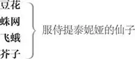

忒修斯 ，雅典公爵
希波吕忒 ，亚马孙女武士族的女王，与忒修斯订有婚约
伊吉斯 ，雅典朝臣，赫米娅之父
拉山德 ，爱慕赫米娅
赫米娅 ，爱慕拉山德，但其父命其嫁与狄米特律斯为妻
狄米特律斯 ，爱慕赫米娅，一度为海丽娜的追求者
海丽娜 ，爱慕狄米特律斯
彼得·昆斯 ，木匠，业余剧团团长，担任插剧的致辞者
尼克·波顿 ，织工，在业余演出中饰演皮剌摩斯 1
弗朗西斯·弗鲁特 ，风箱修理工，在业余演出中饰演提斯柏
斯纳格 ，细木工，在业余演出中饰演狮子
汤姆·斯诺特 ，补锅匠，在业余演出中饰演墙
罗宾·斯塔佛林 ，裁缝，在业余演出中饰演月光
奥布朗 ，仙界之王
提泰妮娅 ，仙界之后
“好人儿”罗宾 ，亦称帕克，服侍奥布朗的精灵

菲劳斯特莱特 ，忒修斯的廷臣 2
忒修斯宫中的其他侍从；服侍奥布朗的其他仙子
雅典
忒修斯 3 、希波吕忒 4 及其他人[菲劳斯特莱特及众侍从]上
忒修斯 美丽的希波吕忒，你我婚期将至，
过四个吉日 5 就有新月升起。
哦，这旧月残得可真慢，
耽搁了我美梦成真的时间，
它像个继母、遗孀，
久久空耗着应属青年人的财产。
希波吕忒 四个白日很快会变成四个黑夜，
四个黑夜又会很快于睡梦中消逝。
而后一弯明月就会像新张的银弓，
高悬天际，见证你我
缔结良缘之夜。
忒修斯 菲劳斯特莱特，去。
鼓动雅典的青年男女纵情欢乐，
唤醒活泼、轻捷的愉悦精灵，
把忧愁和悲伤赶到葬礼上去。
婚典上的宾客哪能面色惨白。
[菲劳斯特莱特下]
希波吕忒，我曾用利剑追求你， 6
在侵害你时赢得你的垂青，
而今要换一种格调迎娶你，
我要举行盛典，公开庆祝，普天同庆。
伊吉斯 参见忒修斯公爵，愿您吉祥喜乐！
忒修斯 谢谢，好伊吉斯，有什么事啊？
伊吉斯 说来真是气死人，微臣特来请您评理。
微臣要状告不孝之女，就是小女赫米娅。
狄米特律斯，过来。尊贵的殿下，
微臣有心招这位做东床快婿。
拉山德，过来。仁慈的公爵，
这小子，却害得息女鬼迷心窍。——
就是你，拉山德，你小子给她写情诗，
和她交换什么爱情信物，私订终身，
还敢趁着月色到她闺房窗外，
拿腔拿调，假惺惺地唱情歌，
令她对你暗生情愫。
你送她用自己头发编结的手串，
以指环、珠子、饰品、花哨物件、
小摆设、小玩意儿、小花束、甜食蜜饯之类
容易让天真少女动心之物为说客，
刁滑地窃据了小女的芳心，
她原本对我孝顺恭敬，
如今却执迷不悟。——仁慈的公爵，
倘若她不肯当着您的金面
在此答应嫁与狄米特律斯为妻，
微臣便祈请雅典律法 10 ，
赐微臣处置亲生女儿的权力，
或是将她许配给这位贵公子为妻，
或是立即将她依律处死。
忒修斯 你怎么说，赫米娅？美丽的姑娘，
可知令尊于你好比神明，
你的美貌为他所赐，不错，你只是他
留在软蜡上的印记。
他有权决定
是保留它，还是毁了它。
狄米特律斯是位可敬的绅士。
赫米娅 拉山德也是啊。
忒修斯 话虽不假，
可此事尚需令尊首肯，
如此看来他就比狄米特律斯略逊一筹。
赫米娅 家父能按奴家的眼光挑人就好了。
忒修斯 应当说是你该按照他的心意挑人。
赫米娅 请殿下恕罪。
奴家不知缘何如此大胆，
也不知在此剖明心迹，
于自家清誉有何损伤。
但请殿下明示，就眼下情形，
奴家若不嫁与狄米特律斯为妻，
最糟会是什么下场。
忒修斯 不是受死，就是受罚去过
与男子永世隔绝的生活。
所以呢，美丽的赫米娅，你考虑考虑自身的欲求，
你青春年少，热情洋溢，
若要罔顾令尊之言，可须想清楚，
自己能否忍受一袭修女袍服，
至死困居阴暗的修道院，
对着不毛的冷月苦唱赞歌，
作为出家人无嗣而终。
那些自我克制，
以少女之身隐修之人，自然多蒙天佑，
但常人之福还是让玫瑰变精油芬芳长驻，
而不致纯洁地凋萎于荆棘枝头，
从生至死沉浸于蒙恩的孤独。
赫米娅 大人，奴家就这么自开自谢吧，
奴家不愿让这贵人
享用自己的清白之身，他要给奴家的羁绊，
奴家不甘领受。
忒修斯 你好好想想，等下个新月升起——
本王与爱人
结为百年之好那天——
你再决定是违抗父命，
领罪赴死，
还是如他所愿委身下嫁狄米特律斯，
或是在狄安娜 11 祭坛前立誓，
永保童贞，矢志清修。
狄米特律斯 可爱的赫米娅，听话。——拉山德，
放弃你贪慕的东西，它是我的。
拉山德 狄米特律斯，你既蒙她父亲器重，
就让我保有赫米娅，你去和他结婚吧。
伊吉斯 出口伤人的拉山德！你说得对，我就是青睐他。
我拥有的一切，我都会交给自己青睐的人，
她是我女儿，我对她享有的权利，
我全都交给狄米特律斯。
拉山德 大人，小人和他一样出身高贵，
一样饶有资财，还爱得比他深。
论及各方面条件，小人就算没胜狄米特律斯一筹，
也不会比他逊色。
更何况，除此之外，
小人还是美丽的赫米娅的真爱。
那小人何不坚持自己的权利？
至于狄米特律斯，小人敢当面说他
追求过奈德之女海丽娜 12 ，
赢得了她的心吧。那个可爱女人，
她恋慕着，痴恋着，死心塌地地爱着
这个劣迹斑斑的花心鬼。
忒修斯 说真的，此事本王确有耳闻，
还想与狄米特律斯谈谈，
可自家事情一多，
就给忘了。狄米特律斯，过来，
你也来，伊吉斯，与本王同行。
听听本王的私人忠告。
至于你呢，美丽的赫米娅，你务必做好准备，
遵照令尊的意旨行事，
否则雅典律法必将对你严惩不贷，
不把你处死，也要令你发誓独身。
我们也无法为你通融减罪。——
来，我的希波吕忒，你都好吧，亲爱的？——
狄米特律斯、伊吉斯，来吧。
本王有些婚礼筹办方面的事
需各位出力，还想与你们商量几桩
与你们息息相关的事。
伊吉斯 遵命。
除拉山德与赫米娅外众人下
拉山德 亲爱的，怎么啦？脸色这么苍白？
你颊上的玫瑰怎么谢得这么快？
赫米娅 怕是缺少雨露滋养，我有的是滂沱泪雨
来把它们浇灌。
拉山德 我曾涉猎的群书，
听过的故事和史实，
都说真爱路上无坦途，
要么是贵贱有别——
赫米娅 哦，倒霉！门第太高无法为爱臣服。
拉山德 或是生不逢时，年齿悬殊——
赫米娅 哦，头疼！老少参差难成佳偶。
拉山德 再不，就是得听任亲朋 13 拿主张——
赫米娅 嗨，见鬼！得按旁人的眼光挑爱人。
拉山德 即便挑对了人，
战争、死亡、疾病也可能将爱重重围困；
令它像声音一样转瞬即逝，
又飘忽如影，短促如梦；
疾如暗夜闪电，
刹那间照亮天地，
不等人说“看哪！”
就被黑夜的巨口吞噬，
光明就此迅速地殒于黑暗。
赫米娅 如果真心相爱之人总要遭受阻挠，
如果这就是命运的裁断，
是屡见不鲜的磨难。
像思念、梦想和叹息，
像憧憬和眼泪，时时与爱为伴。
那我们两个可怜的追梦人，就耐心忍受考验吧。
拉山德 很有道理。且听我说，赫米娅，
我有个寡居的姑妈，
她进项颇丰，膝下却无人承欢，
因而视我为独子，百般钟爱。
她家离雅典不过七里格 14 ，
温柔的赫米娅，到那儿我就能娶你了。
在那儿，雅典的严刑酷法
对我们鞭长莫及。如果你爱我，
明晚就偷偷离开父亲家，
到离城一里格的树林去，
就是依五朔节风俗 15
我与你和海丽娜清早会面的地方，
我会在那儿等你。
赫米娅 好拉山德，
凭丘比特 16 最硬的弯弓，
和他最锐利的金头箭 17 ，
凭维纳斯鸟 18 的纯洁，
凭结合心灵、加深爱意的一切，
凭迦太基女王目睹背信的特洛伊人扬帆离去， 19
点燃的自焚之火，
凭天下男人背的誓，
它的数目超出古往今来女子的言辞，
我对你发誓，明日我一定在你说的地方，
等着与你见面。
拉山德 亲爱的，一言为定。瞧，海丽娜来了。
海丽娜上
赫米娅 天神保佑，美丽的海丽娜，你上哪儿去？
海丽娜 你说我美？别这么说，
狄米特律斯钟情于你的美貌，哦，幸运的美貌！
你的眼是北极星，你的话是妙乐，
比麦苗青葱、山楂树吐蕾时，
牧人耳畔的云雀啁啾更动听，
既然疾病会传染，哦，多希望美貌也一样，
美丽的赫米娅，我离开之前，要学会你的言语，
我的耳要记住你的嗓音，我的眼要效法你的目光，
我的舌端要如你那般曼吐清音。
即使我拥有全世界，只要缺了狄米特律斯，
我还是宁可用一切交换变成你的机会。
哦，教教我你是怎样顾盼生姿，用什么招数
让狄米特律斯心摇神荡。
赫米娅 我冲他蹙眉，可他还是爱我。
海丽娜 哦，真希望我的微笑与你的颦蹙效果相当！
赫米娅 我咒骂他，但他依然爱我。
海丽娜 哦，真希望我的祷告也能这般引动柔情！
赫米娅 我越是讨厌他，他越是穷追不舍。
海丽娜 我越是爱他，越是惹他讨厌。
赫米娅 海丽娜，犯傻的人是他，错不在我。
海丽娜 不，是你的美惹的祸，多想这是我的错！
赫米娅 放心吧，他再也不会见到我。
我要和拉山德逃离此地，
在我遇见拉山德之前，
雅典就是我的天堂。
哦，后来，不知我的恋人有什么魔法，
居然把这个天堂变成了地狱！
拉山德 海伦 20 ，不瞒你说，
我们打算明晚等福柏 21 在水镜
照见她的银面，
用露珠妆点草叶尖尖，
私奔恋人好隐藏形迹时，
就溜出雅典城。
赫米娅 我俩一向
以那儿的浅色樱草花为床。
躺着说知心话的林子，
就是我和拉山德的会面之所。
我们将从那儿出发，
掉头去别处寻找新朋友、新 22 伙伴，
再会，亲爱的玩伴，为我们祈祷吧。
愿你时来运转，得到狄米特律斯的爱！——
那就说好了，拉山德，我们要按捺思念，
待到明日午夜再见。
下
拉山德 好的，我的赫米娅。——再会，海丽娜。
愿狄米特律斯也爱你，就像你爱他那么深！
下
海丽娜 为什么有的人就能率先走运？
雅典人都认为我长得和她一样美，
是又如何？狄米特律斯不这么看。
他不想知道人尽皆知的事，
如果他爱赫米娅的明眸有错，
我爱他的俊逸无俦也是不对，
即便外表粗俗卑贱，一无是处，
爱情也能让它变得高贵堂皇。
爱情视人不用眼，而用心，
因而生翼的爱神丘比特总被画作瞎子 23 。
爱神本身也全无判断力，
有翅无眼，是莽撞的象征。
他之所以被当成孩子，
是因为他常常误点鸳鸯谱。
嬉戏的顽童们会改口背信，
爱神这孩子也处处受骗。
狄米特律斯认识赫米娅之前，
曾经山盟海誓，说对我情有独钟，
可一见赫米娅，他的金玉鸳盟
就如冰雹遇热，雪释冰消。
我告诉他美丽的赫米娅要出逃，
他明晚就会去林子寻她，
就算他会因我报信心生感激，
我依然代价惨重 24 ，
到那儿见了他再回来，
更会让我痛苦万分。
下
木匠昆斯 25 、细木工斯纳格 26 、织工波顿 27 、风箱修理工弗鲁特 28 、补锅匠斯诺特 29 、裁缝斯塔佛林 30 上
昆斯 咱们的人齐了吧？
昆斯 这张是总名单，雅典人都认为，要在公爵跟公爵夫人成亲那晚表演咱们的插戏，名单上的弟兄再合适不过了。
波顿 第一，好彼得·昆斯，先说这戏讲的是啥，再念念演员的名儿，也好说正事。
昆斯 圣母马利亚在上，咱们的戏名叫《一出最可悲的喜剧，皮剌摩斯和提斯柏的惨死》。
波顿 这是一出好戏，俺敢打包票，它还很搞笑呢。哎，好彼得·昆斯，照名单念念角儿的名字。各位，大伙们别凑这么近。
昆斯 听到名字就应一声。尼克·波顿，织布的。
波顿 有。先说俺演什么，再接着挨个点名。
昆斯 你，尼克·波顿，定好演皮剌摩斯了。
波顿 皮剌摩斯是什么样儿的人啊？是情郎，还是霸君？
昆斯 是情郎，他为了爱呀，挺勇敢地结果了自个儿的性命。
波顿 要想演得像，还得来几滴眼泪水儿。要是让俺演，看官们可得留神自家的眼睛咯。咱要叫全场放声大哭，咱会装出几分悲痛的样子。接着点名哪——可演霸君才对咱的胃口。俺能把厄克勒斯 33 那种高声怒骂、毁灭一切的角色演得活灵活现。
惊人的岩石，
令人战栗的惊骇，
会将狱门上高挂的
重重固锁一震而碎；
菲波斯的天车 34 ，
将自远方大放光明，
追上愚蠢的命运之神 35 ，
叫她们彻底毁灭。
那才了不得！接着给其他人点名吧。这就是厄克勒斯的范儿，霸君的
范儿，情郎还得忧愁点儿。
昆斯 弗朗西斯·弗鲁特，修风箱的。
弗鲁特 有，彼得·昆斯。
昆斯 你来扮提斯柏。
弗鲁特 提斯柏是什么人？是游侠？
昆斯 是皮剌摩斯爱的姑娘。
弗鲁特 不成，说真的，别让咱演娘儿们了，咱都长胡子啦。
昆斯 没事儿，你戴面具演，尽量尖声说话。
波顿 俺也会把脸遮起来，让俺演提斯柏吧。俺会柔声细气地说，“提斯柏！提斯柏！”“啊！皮剌摩斯，小冤家，奴是你的提斯柏，你最亲爱的姑娘！”
昆斯 不成，不成，你得演皮剌摩斯。——弗鲁特，你演提斯柏。
波顿 好吧，接着点名。
昆斯 罗宾·斯塔佛林，裁缝。
斯塔佛林 有，彼得·昆斯。
昆斯 罗宾·斯塔佛林，你演提斯柏他娘。汤姆·斯诺特，补锅匠。
斯诺特 有，彼得·昆斯。
昆斯 你演皮剌摩斯他爸。咱演提斯柏她爹。 36 斯纳格，做细木工的，你扮狮子。咱想这戏份就分完了 37 。
斯纳格 狮子的台词你写了吗？写好的话，还请给咱瞧瞧，咱记性特差。
昆斯 你不用记词儿，光嚷嚷就成。
波顿 让俺演狮子吧。俺会嚷嚷，管保让大伙儿听了高兴。俺会嚷得连公爵都传口谕，说“让他再嚷！让他接着嚷！”
昆斯 你要是嚷得太吓人，吓坏了公爵夫人和那班太太小姐，害她们尖叫起来，那咱们一准全给吊死。
众 那咱们一准全给吊死，谁也跑不了。
波顿 朋友们，你们说得很对。要是你把太太们吓昏了头，她们肯定不由分说就吊死咱们。不过，俺会把嗓门压得高些 38 ，不对，是提得低些。俺能嚷得像吃鸽乳的小鸽子 39 叫唤那么轻，跟夜莺似的。
昆斯 你只能演皮剌摩斯，他长得俊，又特体面，就像你夏天见到的那种人，相貌堂堂，人见人爱，所以让你演。
波顿 成，那咱就扮皮剌摩斯。俺要戴什么胡须？
昆斯 随便。
波顿 演戏的时候，俺要么戴你的稻草色胡须，要么戴黄褐色的那副，或者戴染红的那副，不然就戴法国金币色的，纯黄的那副。
昆斯 有些个法国人分明是秃脑袋 40 ，你还是光着脸上吧。各位，这是台词。咱请求你们，恳求你们，要求你们，明晚之前全给记熟喽，咱们借着月光，到城外一英里的禁林碰头，在那儿排练一下。要是在城里排，会有很多人跟着咱们，把咱们想怎么演都泄露了。现在咱来开张单子，把演戏会用到的东西全写上。请各位别误事。
分发台词
波顿 俺们一定去。上那儿排练俺们会更淫秽 41 ，更大胆。大伙儿下点功夫，争取把这事儿办得漂漂亮亮。再会。
昆斯 回头咱们在公爵的橡树底下见。
波顿 中，谁也别放鸽子 42 。
众人下
雅典附近的树林
一小仙自一门上，“好人儿”罗宾 43 [帕克]自另一门上
罗宾 喂，精灵！你要漫游到哪儿去？
小仙 我飞过了小山、谷峪，
穿过了矮树丛和荆棘，
越过了庭园和围场，
水里来，火里去。
我巡游了各地，
比月儿圆轨 44 的转动更轻快。
我为仙后奔忙效力，
在她草环 45 上缀满露珠晶莹。
高挑的报春花是她的近侍，
身着饰有斑点的黄金衣，
那是众仙示好投赠的红刚玉，
花儿的脉脉清芬在斑点中蕴蓄。
我得在这儿找几颗露珠，
为它们都戴上珍珠耳坠。
再会，你这精灵中的憨货，我得走啦。
我们仙后和随侍的诸仙即刻就到。
罗宾 今晚陛下要在此地大张筵席。
千万别让王后相见，
奥布朗正在气头上。
仙后从印度国王那儿
偷了一个小王子作侍从，
那是她最最可爱的换儿 46 。
奥布朗见了很眼热，
要他当自己的侍童，随其丛林漫步。
可仙后坚决不肯割爱，
还为小王子戴上花冠，对他万般呵护。
自此不论在清泉畔，
还是在星辉熠熠的丛林、草地，
仙王、仙后见面就彼此恶言相加，
让小仙们心惊胆战，纷纷往橡子壳里藏。
小仙 要是我没认错，
你就是那个既滑头，又淘气的精灵，
名叫“好人儿”罗宾。不就是你
吓唬乡村女郎，
撇掉牛奶上的乳脂，让主妇累得喘不过气
也搅不出奶油。有时你会悄悄替人磨谷，
有时又害酒发不了酵，
你还把夜行者引入歧途，自己躲在一旁偷笑。
谁管你喊“上仙”，唤你声“好帕克”，
你就为谁卖力，让谁交好运。
我没说错吧？
罗宾 让你说对啦。
我正是那个快活的夜游仙。
我为奥布朗打趣逗笑，哄他开心，
见了膘肥体壮的公马，
我就学小母马嘶鸣，让它信以为真，神魂颠倒。
有时我变作一颗烤山楂，
藏进长舌妇的酒杯，
待她举杯饮酒，我就朝她嘴上啪的一弹，
让整碗麦酒浇在她干皱的脖子上。
有时我变成一张三脚凳，
最世故的大婶刚要落座，开讲最严肃的故事，
我便从她身下溜走，叫她摔个屁股蹲儿，
又是喊“裁缝” 47 ，又是咳呛不止，
逗得在场的人全捧腹大笑，
笑到全身无力，打着喷嚏赌咒说
从没这么乐和过。
让开，仙子！奥布朗 48 驾到。
小仙 我的女主人也驾临了。该让开的是他！
仙王[奥布朗]率扈从自一门上，仙后[提泰妮娅 49 ]率扈从自另一门上
奥布朗 不巧在月下遇见你，傲慢的提泰妮娅！
提泰妮娅 怎么，是好嫉妒的奥布朗！诸位仙家，速离此地。
本宫发誓不与他同游共寝了。
奥布朗 且慢，暴躁的泼妇 50 ！难道朕不是你夫君？
提泰妮娅 那本宫一定是尊夫人了。可本宫知道
你过去溜出仙境，
假扮牧人科林 51 ，成天
吹麦笛，唱情歌，
与放浪牧女菲莉达 52 调情。今番你不远千里，
从印度尽头赶来此地却是为何？
不就是为了那个精力旺盛的 53 亚马孙女王，
你那穿靴子的情妇、当武士的爱人，
她要嫁给忒修斯了，你来
让他们琴瑟和鸣，子孙延绵。
奥布朗 你还好意思讲这种话，提泰妮娅，
竟然影射朕和希波吕忒不清不白？
你和忒修斯的私情瞒得了朕？
还不是你趁夜色朦胧，
还背叛了美丽的埃格勒斯 56 、
提泰妮娅 这都是你乱吃飞醋，含血喷人。
自仲夏之初，
每当我们在山上、谷中、林里、草上，
在细石为底的水泉边，在灌木丛生的小溪旁，
在卵石遍布的海滩上聚会，
准备和着风儿的呼啸跳环舞，
你就来搅扰我们的雅兴。
风儿见我们无视它的吹奏，
心生怨怼，吸起海中的
毒 59 雾，让它化成瘴雨洒向大地，
让条条小溪满溢，
溪水没过堤岸。
害耕牛白白拉犁，
农夫枉流血汗，青青嫩禾
未生芒须就全数腐烂。
羊栏空了，田地一片汪洋，
瘟羊的尸首养肥了乌鸦。
玩“九宫格棋” 60 的草坂遍是泥泞，
曲径人迹断绝，
野草横生，无从辨认。
这儿的人不办冬日庆典，
夜晚的欢乐颂歌无处可闻。
让司掌潮汐的月亮，
气得面色发白，它使空气充满水分，
导致湿病 61 横行。
天时不正让我们目睹
季候之反常：白发寒霜
倒在绯红鲜玫瑰的膝上，
苍老的赫姆斯 62 在薄冰冠上
顶起夏日香蕾编结的花环，
如同嘲讽。春季、夏季、
丰饶的秋季、狂暴的冬季，都变了
平时的装束，让惊愕的世人
无法凭眼前风物将时节分辨。
凡此种种的祸殃，
皆源于我们的争端，是我俩的不和，
滋生了这一切灾难。
奥布朗 那你就该设法补救，全看你了。
提泰妮娅为何要惹恼她的奥布朗？
朕只想要那小换儿
当侍童罢了。
提泰妮娅 请死了这条心吧，
整个仙境也换不到那个孩子。
他母亲是本宫门下信徒，
在芳香四溢的印度之夜，
她常在本宫身旁伴本宫闲谈，
与本宫同坐在海神涅普顿 63 的黄沙上，
点数海上的商旅行船，
一同笑看船帆因狂浪的风受孕，
个个凸起了肚腹。
她当时怀着这个小家伙，
还学帆船的样儿，
在海滩上迈着曼妙轻盈的步子，
为本宫拿取各种零星物什，回来时
犹如海船归航，带来商品无数。
可她原是凡人，临蓐时不幸辞世。
本宫是为她将这孩子抚养，
也是为了她不愿与他分离。
奥布朗 你会在林子里待多久？
提泰妮娅 也许待到忒修斯婚礼结束。
你若有心与我们共跳环舞，
看我们在月下嬉戏，就与本宫同行。
不然，请回避本宫，本宫也不到你的地盘去。
奥布朗 交出那个孩子，朕就跟你走。
提泰妮娅 你用仙国来换也白搭。诸位仙家，走吧！
再不走，我们就要吵起来了。
[提泰妮娅及其扈从]下
奥布朗 好，去你的吧！为了你这回的忤逆，
朕要在你出林子前教训你一番。
好帕克，过来。你记不记得
有一回朕在海岬上坐着，
听见一个骑海豚的人鱼，
用她那珠圆玉润的歌声，
安抚了惊涛翻滚的大海。
几颗入迷的星星跃出轨道，
只为欣享这海女的清音。
罗宾 记得。
奥布朗 就在那时，你虽看不见，朕却看见
手持弓箭的丘比特
在冷月和地球间飞翔。他瞄准
端坐于西方王座的美貌童贞女 64 ，
娴熟地开弓射出爱情之箭，
像要让它射穿十万颗心似的。
但我能看见小丘比特那惹动情火的金箭
在如水月华中熄灭，
童贞女王的心波澜不生，
专注于纯洁的冥想，心无旁骛。
我还看到丘比特之箭落在了何处，
它掉在西边的一朵小花上，
那花原是乳白色，为爱所伤就变作紫色，
姑娘们管它叫“三色堇”。
替朕将它采来。朕让你见过它的样子。
无论是男是女，只要睡眼被它的汁液滴到，
就会疯狂地爱上
睁眼后最先看见的生物。
替朕把花采来，在海怪利维坦 65 游完一里格前，
必须回来复命。
罗宾 我环游全世界
也只需四十分钟。
[下]
奥布朗 花汁一到，
朕就留神等提泰妮娅睡下，
将它滴进她眼中。
她一觉醒来，就会以最狂热的爱情
追求第一眼所见的生物，
不论它是狮子、狗熊、野狼、公牛，
还是添乱的猕猴、好动的无尾猿。
朕还有解除魔力的药草，
但解除魔力之前，
她得先把那孩子让给朕。
有谁来啦？凡人看不见朕，
且听他们要说什么。
他退至一旁
狄米特律斯上，海丽娜随上
狄米特律斯 我又不爱你，别跟着我。
拉山德和美丽的赫米娅在哪儿？
我要和拉山德比个高低，但满心都是赫米娅。 66
你说他们偷跑到这林子来，
我就赶到此地，可没见着我的赫米娅，
我在林子里都快发疯了。
滚开！你快走，别跟着我！
海丽娜 是你引我跟着你的，你这狠心的磁铁！
可你吸的不是铁，因为我的心
有钢那么坚贞。你要是去掉自己的吸引力，
我就无力跟随你了。
狄米特律斯 是我引诱你吗？我对你甜言蜜语啦？
我不是清清楚楚地告诉你，
我不爱你，也不能爱你吗？
海丽娜 话虽如此，也只会让我更爱你。
我是你的西班牙猎狗，狄米特律斯。
你越是打我，我越是讨好你。
就把我当作你的猎狗吧，踢我、打我、
怠慢我、杀死我都好，只要让我跟着你。
纵然我一无是处，
在你的爱情里讨要的地位
还能低于一条狗吗？
可那已经让我如获至宝了。
狄米特律斯 少烦我了。
我一见你就头痛。
海丽娜 我不见你就心痛。
狄米特律斯 真不知羞耻，
竟然离城把自己交付
给不爱你的人处置，
你的贞洁万分宝贵，
还敢在漆黑的夜里
来这种荒郊野地，也不怕遇上麻烦。
海丽娜 你的美德就是我的保障。
我看见你，黑夜也变成白昼，
因而不觉得现在是夜晚。
你在我眼中就是全世界，
我在林子里并非形影相吊。
有全世界人在这儿看着我，
我怎么是孑然一身？
狄米特律斯 我要避开你，躲到丛林去，
随便野兽怎么收拾你。
海丽娜 最凶猛的野兽也没你残酷。
你要逃就逃吧，今后传说都得改写了：
逃的是阿波罗，追的是达佛涅。 67
鸽子追逐鹰隼，温柔的牝鹿
穷追猛虎。可弱者追求强者，
总是水中捞月一场空。
狄米特律斯 我才不听你啰唆，让我走。
你再敢跟来，相信我，
在这片林子里我可要欺负你了。
[↓狄米特律斯下↓]
海丽娜 唉，在神庙、在城镇、在田野，
你处处欺负我。呸，狄米特律斯！
你让我受的委屈折辱了所有女性。
我们不能像男人那样为爱与人打斗，
我们该让人追求，不该追求别人。
我矢志追随你，把地狱当作天堂，
即便死在意中人手里也在所不惜。
下
奥布朗 再会吧，仙姬！在他离开这林子之前，
你就会逃避他，他却要来寻求你的爱。
[罗宾]帕克上
欢迎啊，浪游者！你摘到那朵花了吧？
罗宾 嗯，在这儿。
示花朵
奥布朗 请把它给朕。
朕知道一处野百里香盛放的山坡，
长满高报春和摇曳的紫罗兰，
茂盛的忍冬为它们张开幔帐，
还有藤月季和多花蔷薇吐露芬芳。
夜晚提泰妮娅会在那儿稍事歇息，
有曼舞轻歌抚慰她在花间安睡。
长虫在那儿蜕下斑斓的皮，
大小足够将一个小仙裹藏。
朕要擦点儿花汁在她眼上，
让她满脑子尽是可憎的幻象。
你带一些去，在林子里寻访
给他一些花汁
一位见弃于情人的可爱雅典姑娘。
等姑娘到那薄幸男睁眼可见的地方，
就把它涂到他眼上。
他穿着雅典人的衣装，
你须仔细辨识，不得有误。
小心按朕的吩咐办事，
让他对这姑娘的痴情超过姑娘对他的爱意。
头遍鸡鸣时我们再会。
罗宾 放心吧，主上，一切将如您所愿。
同下
仙后[提泰妮娅]率扈从上
提泰妮娅 来，跳一轮仙舞，唱一曲仙歌，
在余下的二十秒内，大家分头行动，
你们几个去消灭藤月季嫩苞里的害虫，
你们几个去和蝙蝠作战，
剥下皮翅来给本宫的小仙们做衣裳，
余下的几个去驱退夜夜啼叫、呆看
我们这班伶俐小仙的猫头鹰。唱歌助本宫入眠吧，
唱完就各忙各的，让本宫稍事休息。
她在堤上躺下
仙子们唱
仙子甲 舌尖分岔的花蛇，
扎人的刺猬，别出来。
蝾螈、蝰蛇，莫捣乱，
远离我们大家的仙后。
合唱 菲罗墨尔 68 ，轻启歌喉，
与我们同唱安神曲：
安神，安神，安神曲，安神，安神，安神曲。
灾殃、
符咒、魔法永退散，
让可爱的仙后享平安。
晚安，入睡吧！
仙子乙 结网的蜘蛛，别过来，
长脚的蜉蝣快走开！
黑色的甲虫，别靠近，
别冒失，小虫和蜗牛。
合唱 菲罗墨尔，轻启歌喉，等等 69 。
仙子甲 去吧！都安顿好了，
留一个在远处放哨就好。
她[提泰妮娅]入睡。[众仙子下]
奥布朗上
奥布朗 你醒来无论见了谁，
挤花汁在提泰妮娅眼上
都会立即将他爱，
为他苦把相思害。
不论是猞猁、山猫、大狗熊，
还是豹子、毛蓬蓬的大野猪，
等你醒来瞧见了，
都会成你的心头爱，
你且待丑怪近前再把眼开。
[下]
拉山德与赫米娅上
拉山德 好人儿，你在林中东奔西走，都快累晕了。
说实话，我不记得路了。
要是你答应，赫米娅，我们就休息一下，
等天亮再说。 70
赫米娅 就依你，拉山德。你自己找地方睡吧，
我要在这草堤上安歇。
拉山德 一块草地足够你我安枕。
两个胸膛一条心，正该合睡一眠床。
赫米娅 不，亲爱的拉山德。为了我，亲爱的，
躺远些，别挨这么近。
拉山德 哦，亲爱的，别误会，我没有邪念！
恋人应当能听懂彼此的话。
我是说你我心心相印，
不分彼此。
两人的胸臆由盟誓联结，
同怀一片赤忱。
就让我睡在你身边吧，
我这样躺在你身旁，赫米娅，不是要带坏 71 你。
赫米娅 拉山德真会说话。
要是赫米娅担心拉山德起歹心，
愿她从此尽失颜仪。
可是，好朋友，考虑到爱情和礼数，
还请睡远些吧。按世人的礼法，
如此保持距离
对洁身自好的未婚男女最为相宜。
那么远就行了。晚安，亲爱的朋友。
愿你的爱永远不变，直到宝贵的生命停息！
拉山德 哦，我为你美好的祝祷应声阿门！阿门！
我若变心就一命呜呼！
这是我的眠床。愿睡眠给你一切安适！
赫米娅 愿许愿者分享一半安适！
他们入睡
[罗宾]帕克上
罗宾 林子我已都寻遍，
雅典人还未曾入眼，
我要把花汁滴在他眼上，
验证它激发的爱情力量。
夏夜静悄悄——谁在这儿？
看见拉山德
他一身雅典人衣装。
我主公说的正是他，
狠心冷落那美娇娃。
她在这边倒睡得香，
全不顾地上湿又脏。
美丽的姑娘！她竟不敢
挨近这负心汉、薄情郎。
恶棍！我已在你眼上
滴花汁于拉山德眼上
施下迷药的全部魔力。
等你醒来，爱情就会
让你今后夜不成眠。
等你醒来我早已远走，
奥布朗还盼着与我碰头。
下
狄米特律斯与海丽娜奔上
海丽娜 你杀了我算了。请留步，亲爱的狄米特律斯。
狄米特律斯 我叫你走开，别这样缠着我。
海丽娜 哦！你要把我丢在黑暗中吗？请别这样。
狄米特律斯 站住！不然就叫你活不成。我要独个儿走。
下
海丽娜 哦！这番痴心追赶累得我快断气！
我越是百般求告，越是惹他憎恶。
赫米娅无论在哪儿都幸福，
因为她有一双天赐的媚眼。
她的眼怎么会那么明亮？不会是因为流过苦泪，
如果是，我的眼睛才更常让泪水冲洗。
不，不，我丑得像狗熊，
连野兽见了都会给吓走。
难怪狄米特律斯这样躲着我，
像躲开一个怪物。
是哪面镜子恶意欺人，
让我斗胆把自己的眼目与赫米娅的星眸相提并论？
谁在这儿？拉山德！怎么躺在地上？
看见拉山德
是死了，还是睡了？我没看见血，也没发现伤口。
拉山德，好朋友，你要是没死，就醒醒吧。
拉山德 为了美丽的你，我愿赴汤蹈火，
醒转
光芒四射 72 的海丽娜！造化在你身上大显神功，
让我能在你胸前看透你的心。
狄米特律斯在哪儿？哦！那个难听的名字，
合该当我的剑下亡魂！
海丽娜 别这样，拉山德，别这么说。
他爱你的赫米娅又如何？上帝，那又如何？
赫米娅还是爱你，你该心满意足才是。
拉山德 为赫米娅心满意足？不，我真为
与她共度的可厌时光后悔。
我不爱赫米娅，我爱海丽娜。
谁不愿拿一头乌鸦换一羽白鸽？
男人的意志 73 由理性支配，
理性告诉我你比她更值得爱。
一切生灵不到时节，总不成熟。
我过去年纪尚轻，理性欠缺，
可如今我的智慧已成长成熟，
理性指引着我的意志，
将我带到你面前，从你眼中
读到爱情经典最动人的华章。
海丽娜 这番尖刻嘲笑要我如何忍受？
我何时得罪过你，你要这么讥讽我？
我从来不曾得到，也永远不会得到
狄米特律斯爱怜的一瞥，
难道那还不够，难道那还不够，年轻人，
你还要这样讥诮我的短处？
是的，你侮辱了我。说真的，你侮辱了我。
这样满含轻蔑地对我假献殷勤。
再会吧！我还以为
你是更有教养的上等人呢。
哦！女人家遭到一个男人的拒绝，
还得忍受另一个的戏弄！
下
拉山德 她没看见赫米娅。赫米娅，睡你的吧，
千万别靠近拉山德。
一个人甜食吃多，
难免要泛恶心，
皈依正教之人
最恨往日骗他的异端邪说。
你就是我眼中的甜食、邪说，
活该你遭人憎恶，谁都没我恨你。
我的所有生命力啊，让爱情和力量听候海伦差遣，
做她忠实的骑士吧！
下
赫米娅 救命啊，拉山德！救救我！
醒转
尽力拨开这条在我胸口蜿蜒的蛇！
哎呀，天哪！做了什么噩梦！
拉山德，瞧我吓得发抖。
我好像觉得有蛇在噬咬我的心，
而你却坐在一旁，笑看它无情肆虐。
拉山德！怎么，换地方了？拉山德！上帝啊！
这是怎么啦？没听见？走了？无声无息，一声不吭？
唉！你在哪儿呀？要是能听见我喊，就应一声。
凭所有爱情的名义，说话呀！我都要吓晕了。
还是毫无声息！我很清楚你已经离开我了。
我若不能马上找到你，瞬息就魂归九泉！
提泰妮娅仍未醒转
下
丑角 74 [波顿、昆斯、斯纳格、弗鲁特、斯诺特与斯塔佛林]上
波顿 都来了吧？
昆斯 准点，准点，这地儿排戏不错。这片草地就是俺们的戏台，这丛山楂树就是化装间。俺们好好演，就跟当着公爵的面似的。
波顿 彼得·昆斯？
昆斯 什么事，波顿好伙计？
波顿 《皮剌摩斯和提斯柏》这本喜剧里，有几个地方肯定没法儿叫人满意。第一，皮剌摩斯得拔出剑来自杀，这是女士们受不了的。你们说是不是？
斯诺特 咱凭圣母娘娘的名号起誓，这可不是闹着玩儿的。
斯塔佛林 要么咱们把别的内容演完，去掉这段自杀戏。
波顿 不用去，俺有个妙计，什么问题都能摆平。给俺写个开场白，大概是说：俺们的剑不伤人。其实皮剌摩斯也不是真把自己结果了。为了保证万无一失，可以告诉她们俺这扮皮剌摩斯的，可不是真的皮剌摩斯，俺是织工波顿。这样她们就不害怕了。
昆斯 好，咱们就来段开场白，咱能用八六体 75 写。
波顿 不，再多加俩字，让它变成八八体。
斯诺特 女士们难道不怕狮子么？
斯塔佛林 咱敢说她们一定会怕的。
波顿 各位师傅，你们可得想好咯，把一头狮子——上帝保佑俺们！——带到女士们中间也太离谱了。野兽 76 里就数狮子顶可怕。俺们可得好好合计一下。
斯诺特 这么说，还得写段开场白，说他不是真狮子。
波顿 不，你说出他的名儿来，他得从狮脖子那儿露出半边脸，他自己得说，或者说点疑似 77 差不多的话：“女士们”，或是“美丽的女士们，俺希望你们”，要么说“俺请求你们”，也可以说“俺恳求你们，别害怕，别发抖。俺拿性命担保，你们没有生命危险。要是你们认为俺真是狮子，俺才真叫倒霉哪！不，俺根本不是狮子，俺和其他人一样，也是人。”说完他就可以报出名儿来，跟她们讲清楚 78 ，他是细工木斯纳格。
昆斯 好，就这么办。还有两桩事儿也挺麻烦：第一，咱们得把月亮光挪进屋来，你们知道皮剌摩斯、提斯柏他们是在月亮光下碰面的。
斯诺特 咱们演戏那天可有月亮光？
波顿 历书，拿历书来！看看年历怎么说，找出月亮光，看看有没有月亮光。
他们查历书
[罗宾可]上
昆斯 有的，那天晚上有。
波顿 嘿，那你就把俺们演戏那个大厅的窗户留一扇别关，好让月亮光从窗格子照进来。
昆斯 也成。不然就得有人带上柴枝和灯笼 79 ，上场说他搬 80 的是月亮，要么说他淹 81 的是月中人。那就剩一件事了，咱们还得在大厅里搞一堵墙。故事里说，皮剌摩斯和提斯柏是凑在一条墙缝边说话的。
斯诺特 你又不能搬一堵墙进去。你说呢，波顿？
波顿 得找个人来扮这堵墙。往他身上涂点儿灰浆、黏土、粗灰泥什么的，表示他是一堵墙。让他把手指这么比，皮剌摩斯和提斯柏就能透过指缝说话了。
作手势表墙缝
昆斯 这么一来，啥都齐了。来，大伙儿都坐下，念念自个儿的台词。皮剌摩斯，你起头。说完你到那个树丛后头去，每个人就按自己的尾白 82 挨个说。
罗宾[可]上
罗宾 什么伧夫俗子
旁白
敢来仙后榻边呶呶不休？
怎么，要演戏？那我就来当观众。
若是时机对，我兴许也会演一手。
昆斯 说吧，皮剌摩斯。——提斯柏，站出来。
皮剌摩斯[波顿] 提斯柏，花儿吐露的粪房 83 ——
昆斯 “芬芳”，是“芬芳”。
皮剌摩斯[波顿] ——吐露的芬芳。
就像你的气息，俺最最亲爱的提斯柏。
听，有声音！你在这儿等一小会儿，
俺回头就来找你。
下
罗宾 从没见过这么蹩脚的皮剌摩斯。
[下]
提斯柏[弗鲁特] 现在该咱啦？
昆斯 对，哎呀，是该你了。你得弄清楚，他去瞧瞧到底是什么响动，马上就回来。
提斯柏[弗鲁特] 最光彩照人的皮剌摩斯，皮肤像白百合，
面颊如红玫瑰，开在美丽的荆棘枝头
生龙活虎的小伙子，最可爱的宝贝 84 ，
就像不知疲倦的骏马，忠心耿耿。
皮剌摩斯，奴家会到尼尼坟头与你相会。
昆斯 是“尼努斯 85 坟前”，老兄！唉，还不到说这句的时候哪，那是你应答皮剌摩斯的话。你把戏词 86 一气儿说完啦。皮剌摩斯，上场，你的尾白“不知疲倦的骏马”都过了。
提斯柏[弗鲁特] 哦——像不知疲倦的骏马，忠心耿耿。
[罗宾与]戴驴头的皮剌摩斯[波顿]上
皮剌摩斯[波顿] 就算俺有那么帅，提斯柏，俺也只要你的爱。
昆斯 哦，怪物！哦，怪事！有鬼啊！师傅们哪，请大家快逃哇！救命啊！
丑角均下
罗宾 我要跟着来，领你们团团转，
踏过沼泽、灌木、蕨草和荆棘。
我有时是匹马，有时是猎犬，
有时是野猪、无头熊，有时是鬼火。
我要到处学马嘶，学犬吠，学猪嗥，
学熊吼，学火 87 烧。
下
若波顿与其他丑角同下，此时复上
波顿 他们怎么全跑啦？准是耍花招，想吓俺一跳。
斯诺特上
斯诺特 哦，波顿，你变样儿啦！咱在你头上瞧见什么啦？
波顿 瞧见什么啦？瞧见你自个儿变蠢驴啦，对吧？
[斯诺特下]
昆斯上
昆斯 上帝保佑，波顿！上帝保佑！你变样儿啦！
下
波顿 俺知道他们的花样。他们把俺当蠢驴，变着法儿来吓俺。可俺就是不挪窝，不管他们怎么地。俺要在这儿四处溜达，唱起歌来，叫他们听了明白俺一点儿也不怕。
公百舌鸟黑漆漆，
唱
一张嘴巴黄澄澄，
歌鸫唱得顶起劲，
欧鹪嗓音细尖尖——
提泰妮娅 是哪位天使让花榻上的本宫醒来？
醒转
波顿 绿雀 88 、麻雀、百灵鸟，
唱
灰杜鹃的歌儿真单调，
好多男人都听到，
谁也不敢应声“不” 89 ——
说真的，谁有空跟傻鸟较真？ 90 就算被它骂“乌龟”，谁去说它撒谎精？
提泰妮娅 温柔的凡人，请接着唱！
本宫的双耳眷恋你的歌声，
双眼惑于你的样貌。
虽是初次见面，
你的美质已让本宫不禁要说，要发誓说，我爱你。
波顿 夫人，俺想您这也太没来由了。说句实在话，如今这世上，理性很少跟爱情碰头，也不见哪个好心邻居替他俩撮合撮合，真是可惜。瞧，俺也会讲几句笑话应个景儿。
提泰妮娅 你真是既博学又英俊。
波顿 哪里，俺可没那么厉害。俺有本事跑出这林子就不错啦。
提泰妮娅 别想跑出这林子！
不管你愿不愿意，你非留下不可。
本宫可不是寻常精灵，
夏天永远对本宫唯命是从。
本宫真的爱你，跟本宫走吧。
本宫会命众仙来服侍你，
它们会为你打捞深海的宝藏。
当你在花床 91 上安睡，它们会给你唱歌。
本宫能净化你的凡胎俗体，
令你骨健身轻，一如精灵。
四仙子上
豆花 在。
蛛网 在。
飞蛾 在。
芥子 在。
四仙 娘娘有何吩咐？
提泰妮娅 好生伺候这位先生，
蹦蹦跳跳伴他同行，在他眼前雀跃嬉闹。
喂他吃杏子、露莓 94 、
紫葡萄、青无花果和桑葚。
偷来野蜂的蜜囊儿，
割来带蜡的蜂腿当烛炬，
用流萤的火睛点燃， 95
照本宫的情郎晨兴 96 夜寐。
再拔来彩蝶的翼翅，
扇去他睡眼中的月色。
来，仙子们，向他点头致意。
豆花 致敬，凡人！
蛛网 致敬！
飞蛾 致敬！
芥子 致敬！
波顿 劳烦各位上仙多多担待。敢问尊号是？
对蛛网
蛛网 蛛网。
波顿 俺想跟您交个朋友，好蛛网先生。要是俺割破了手指头，就得冒昧用您一用了。 97 ——好先生，您的尊号是？
豆花 豆花。
波顿 请代俺问候令堂豆荚 98 夫人和令尊豆壳 99 先生。好豆花先生，俺也很乐意与您交个朋友。——先生，敢问您的大名是？
芥子 芥子。
波顿 好芥子先生，俺知道您不容易 100 。胆小的牛肉像巨人那样吞了您家好多人。不瞒您说，您的亲戚方才还让俺掉了几滴苦泪 101 。俺想跟您交个朋友，好芥子先生。
提泰妮娅 来，服侍他，引他去本宫的闺房。
本宫觉得今晚月儿的明眸泛着水光，
它一垂泪，每朵小花儿也眼泪汪汪，
哀悼哪个女郎遭人强占的童贞。
让本宫的爱人别出声 102 ，悄悄领他前来。
众人下
仙王[奥布朗]独自上
奥布朗 不知提泰妮娅是否已醒。
只要她一醒，就会热烈地爱上
最先看见的生物。
[罗宾]帕克上
朕的使者来了。——嘿，急火火的精灵！
这着魔的树林出了什么怪事？
罗宾 娘娘爱上怪物了。
在她沉沉入睡时，
她隐秘的神圣寝室边，
来了一群笨蛋。他们都是
在雅典市集做工过活的粗朴手艺人，
他们聚在一起排戏，
预备在伟大的忒修斯成婚那天表演。
在这帮蠢货中，最笨的那个
扮演戏里的皮剌摩斯。
趁他下场走进树丛，
我看准时机，
给他的脑袋上装了驴头。
过会儿他听到提斯柏唤他，
就又现身了。他们一见他，
活像大雁瞅见悄悄靠近的猎人，
像一大群灰鸦 103
听见枪声轰然起飞，
聒噪着扫过天空，
全都四下逃命。
我把脚一跺，他们个个跌跤，
乱喊“杀人”，高呼“雅典人救命”。
他们本就糊涂，这回更吓得六神无主，
无知无觉之物也趁机捉弄他们：
野茨和荆棘抢夺他们的衣服，
有人丢了袖子，有人掉了帽子，如同败兵备受欺凌。
我领着惊慌失措的他们走开，
让变了样的可爱皮剌摩斯留下。
就在那时，事情就这么发生了，
提泰妮娅醒了，立即爱上了这头驴。
奥布朗 这比朕能想到的计策更妙。
你可按朕的吩咐，
将三色堇花汁滴在那雅典人眼上？
罗宾 我撞见他在熟睡——也办妥了——
那个雅典女人就在他身边，
只要他一醒，肯定能看见。
狄米特律斯与赫米娅上
奥布朗 站过来，正是这个雅典人。
他们退至一旁
罗宾 是这女的没错，可不该是这男的。
狄米特律斯 唉！你干吗痛骂深爱你的人？
这番臭骂用在仇人身上才对。
赫米娅 我还只是骂几句。我该给你更厉害的教训，
你怕是干下招人诅咒的事了。
要是你趁拉山德睡着杀死了他，
就连我也杀了吧。
反正两脚都踏进血泊了，索性跳进血河吧。
太阳对白昼，也不如
他对我忠心。我赫米娅没醒，
他会悄悄离开？我宁可相信
能在地球中心凿个隧道，月亮
会从里头爬过去，到地球另一端 104
给她兄长太阳照耀的人和地方添乱。
一定是你杀了他，只有杀人凶手，
脸色才会这么惨白可怕。
狄米特律斯 受害者才有我这种脸色，
你的残酷无情洞穿了我的心。
可你这杀人凶手，却依然莹洁明丽，
宛若闪耀在那片天空的金星 105 。
赫米娅 这些与我的拉山德何干？他在哪儿？
啊，好狄米特律斯，把他还给我！
狄米特律斯 我宁愿用他的尸体喂狗。
赫米娅 滚开，滚开，狗杂种！卑鄙小人！你让我失去
姑娘家的柔顺，忍无可忍。你果真杀了他？
从今往后，我再也不把你当人看了。
哦，看在我的分上，跟我说一回实话！
你这个清醒的人，
看他在睡觉，就对他下了毒手？哦，真勇敢！
就连一条蛇，连一条毒蛇，也比不上你。
毒蛇的舌头比你多了一岔，
却不像你这般害人不浅！
狄米特律斯 你这火发得没道理。
我又没杀拉山德，
据我所知，他还活得好好的。
赫米娅 那请告诉我他安然无恙。
狄米特律斯 若是告诉你，我有什么好处？
赫米娅 你就可以再也看不到我。
从今往后我会远离你这张讨厌的脸，
无论他是死是活，你都别来见我。
下
狄米特律斯 她正在气头上，我还是别跟着她了。
让我在此稍事歇息。
愁绪驱走睡眠，让忧愁
愈加深重；
我且暂访黑甜乡，
好歹补些觉。
[狄米特律斯]躺下[入睡]
奥布朗 你干了什么好事？你犯大错啦，
居然把三色堇花汁滴到一个忠诚恋人眼上。
因为这个错误，
原本忠实的会变心，不忠的还和之前一样糟。
罗宾 一切都是命中注定。保持专一的绝无仅有；
变心、背誓的，却有百万个。
奥布朗 比风更快地到林子去，
务必找到雅典女郎海丽娜。
她为情所困憔悴不堪，
痴情的叹息消损了她的血气 106 。
你务必造些幻象引她前来，
朕会对此人的眼睛施魔法，准备让他俩见面。
罗宾 我就去，我就去，看我的吧。
鞑靼人的箭矢飞得也没我迅疾。
下
奥布朗 这朵紫色的小花，
挤花汁在狄米特律斯眼上
曾为爱神的利箭所伤，
让它带灵力的汁液渗入他的瞳仁。
在他看见她的瞬间，
让她显得光彩夺目，
犹如天上的金星。
等你醒了，而她恰在身旁，
你就会向她乞求垂怜。
[罗宾]帕克上
罗宾 报告仙班之主，
海丽娜即刻就到，
被我错认的青年，
正在哀求她的垂怜。
要不我们就看看他们的痴狂情状？
天哪，凡人真是愚蠢荒唐！
奥布朗 让开。他们的吵闹声
会吵醒狄米特律斯的。
他们退至一旁
罗宾 那两男就会同时追求一女，
肯定特别有趣。
异乎寻常之事，
一向最让我欢喜。
拉山德[随]海丽娜上
拉山德 你为什么认为我追求你是出于讥诮？
讥诮、戏谑绝不会与眼泪并存。
瞧，我立誓的时候，还流着泪！这样发的誓，
一出口就确切不移。
明明有证据显示我所言非虚，
你怎么把我的真情流露看作讥诮挖苦？
海丽娜 你越来越奸诈了。
哦，真假誓言若彼此抵触，就都不足为信！
这些誓言都该对赫米娅发去。难道你要甩了她？
把你给我俩的誓言放进两个秤盘，
它们肯定是半斤八两，
都和谎言一样轻浮。
拉山德 我对她立誓时，的确是没头脑。
海丽娜 依我看，你现在抛弃她，也不像有头脑。
拉山德 狄米特律斯爱她，不爱你。 107
狄米特律斯 哦，海伦！女神！仙子！完美！神圣！
醒转
该用什么来比拟你的明眸，我的心上人？
水晶都相形失色了。哦，你的嘴唇，
这相吻的樱桃，看上去多么成熟诱人！
你一扬玉手，
巍巍托罗斯山 108 巅东风吹拂的皑皑积雪，
就显得黑如乌鸦。让我吻吻
这纯白的公主，这幸福的象征吧！
海丽娜 哦，倒霉！哦，该死！
我知道你们都想取笑我。
要是你们懂礼貌、有教养，
肯定不会这样羞辱我。
你们讨厌我就罢了，
何必串通一气讽刺我？
你们看着像正人君子，倘若真是君子，
就不该这么对待良家 109 女子。
发着誓，赌着咒，夸大我的优点，
我敢肯定你们都是打心眼儿里讨厌我。
你俩是情敌，同爱赫米娅，
现在一道回头嘲笑海丽娜。
真是男子汉的作风，干得漂亮，
嘲弄一个可怜姑娘，害她流泪。
真正的君子
绝不会这样冒犯一个姑娘，
只顾自家寻开心，让她忍无可忍。
拉山德 你太过分了，狄米特律斯，别这样。
你爱的是赫米娅，你知道我对此心知肚明。
我现在完全出于一片好心，
把我在赫米娅爱情中的地位拱手相让，
你也得把海丽娜的爱情让给我，
因为我真的爱她，至死不渝。
海丽娜 讽刺人还这么多废话。
狄米特律斯 拉山德，留着你的赫米娅，我才不要哪。
就算我爱过她，那份爱也无影无踪了。
我的爱只是暂栖在她身上，如同过客；
而今重返家园，回到海伦身边，
再也不会离开了。
拉山德 海伦，他是骗你的。
狄米特律斯 别诬蔑你全然不知的真情，
否则就用性命来弥补过失。
瞧！你的心上人来了，那才是你爱的人。
赫米娅上
赫米娅 黑夜让眼睛失去功用，
却使耳朵格外警醒。
夜色阻碍了目力的发挥，
却让听觉大大增强。
我能找到你，拉山德，并不是靠眼睛，
是我这双耳朵，让我听见你的声音。
你怎么忍心这样离开我？
拉山德 爱情驱使人离开，还有什么好耽搁？
赫米娅 什么爱情会驱使拉山德离开我？
拉山德 拉山德的爱情使他一刻也无法停留——
是美丽的海丽娜，她照亮了夜空，
比那片天空的璀璨繁星更夺目。——
你找我干吗？难道你现在还不明白，
对赫米娅
我是讨厌你，才会那样离开你的？
赫米娅 这不是真的，不是真的。
海丽娜 瞧！她跟他们是一伙！
我明白了，他们三个是串通好了
用这种把戏来羞辱我。
害人精赫米娅！没良心的丫头！
你竟和这种人一起盘算着对付我，
用这种卑鄙玩笑捉弄我？
你我二人从前推心置腹，
发誓义结金兰，共度时光，
还埋怨疾足的时间
狠心将我们拆散——哦！难道你全忘啦？
我们的同窗之情，所有的年少天真，你全置之脑后啦？
赫米娅，我们两个曾像造物女神，
同绣一朵花儿，
同描一个图样，同坐一块椅垫，
同唱一首曲子，
就像我俩的双手、身体、声音和思想
都彼此相连不可分割似的。我们一道成长，
像并蒂的樱桃，看着是两个，
其实是连生。
我们是结在一根茎上的两颗可爱莓果，
看似有两个身体，心 110 却只有一颗。
我们像纹章上的两个徽纹 111 ，
二者共有一个顶饰，同属一个家族 112 。
你想让我们从前的友谊分崩离析，
和男人沆瀣一气嘲弄你可怜的伙伴吗？
这太不念朋友之谊了，也不合女儿家的身份。
不单是我，所有女性都可以为此责难你，
虽说只有我一人受委屈。
赫米娅 你这些激愤之辞真让我吃惊。
我没嘲弄你，好像是你在嘲弄我啊。
海丽娜 难道你没怂恿拉山德跟着我，
假意夸奖我的眼睛、脸蛋？
你的另一个追求者，狄米特律斯，
明明方才还要踢开我，难道不是你
让他称我为女神、仙子，夸我超凡脱俗、举世无双、
神圣稀有、美若天仙？他为何要对
自己厌憎之人说那种话？拉山德的心灵
洋溢着对你的爱，又怎会抛下你，
要把爱情献给我？
难道不是受你指使，有你的赞同？
就算我不像你这样天生有福，
这样被人苦苦追求，这样鸿运当头，
就算我倒霉透顶，只能单相思，又与你何干？
你该同情我才是，不该折辱我。
赫米娅 我不明白你在说什么。
海丽娜 好啊，接着装吧，装得一本正经，
等我一转身，就朝我做鬼脸。
你们尽管冲彼此眨眨眼，接着开玩笑。
这玩笑开得妙，肯定会载入史册的。
你们要是有一点儿同情心、一点儿风度，稍稍懂些礼貌，
就不该这样取笑我。
再见，一半也怪我自己，
生离或是死别很快会弥补我的过失。
拉山德 别走，温柔的海丽娜！听我解释。
我的爱，我的生命，我的灵魂，美丽的海丽娜！
海丽娜 哦，说得妙！
赫米娅 亲爱的，别这样笑她了。
对拉山德
狄米特律斯 要是她恳求无效，我会强迫你闭嘴。
对拉山德
拉山德 她的求恳，你的强迫，全都无济于事。
你的威胁和她软弱的祈求一样无能为力。
海伦，我爱你。我以性命起誓，我爱你。
谁敢说我不爱，我就豁出命来证明他在撒谎，
为了你我不怕舍弃生命。
狄米特律斯 我说我对你的爱远远比他深。
对海丽娜
拉山德 你既然敢说大话，就拔出剑来证明一下吧。
狄米特律斯 那就快来啊，来呀！
赫米娅 拉山德，这一切到底是怎么回事？
她紧拉住拉山德
拉山德 走开，你这埃塞俄比亚黑鬼 113 ！
狄米特律斯 得了，得了，先生，
你做出一副想挣脱的样子，摆出要跟我来的架势，
又不敢跟来。你这孬种，滚吧！
拉山德 放开，你这瘟猫！黏人精 114 ！贱货，放手！ 115
不然我就像甩开一条蛇似的甩开你！
赫米娅 你几时变得这么刻薄了？
究竟是怎么回事，亲爱的？
拉山德 谁是你的亲爱的？走开，黑鞑子 116 ，走开！
讨厌的毒药！可恨的毒剂！滚开！
赫米娅 你不是在开玩笑吧？
海丽娜 没错，说真的，你也一样。
拉山德 狄米特律斯，我言出必行。
狄米特律斯 希望如此，依我看，
柔弱的羁绊 117 正牵系着你。我可不信你的话。
拉山德 怎么！难道要我伤害她、责打她、杀死她？
我讨厌她是真，但还没有那么残忍。
赫米娅 哦！还有什么比你讨厌我更残忍？
讨厌我！为什么呢？天哪！究竟是怎么回事，冤家？
难道我不是赫米娅？你不是拉山德了？
我现在还和从前一样美。
今夜你还爱着我，又在今夜离我而去。
那你真是——
哦，神明不容！——真是存心离开我？
拉山德 不错，我凭生命起誓，就是这么回事。
我再也不想看到你了。
你大可死心，不必起疑，
我的话千真万确，根本不是开玩笑。
我讨厌你，爱海丽娜。
赫米娅 天哪！你这骗子，你这摧花的害虫。
对海丽娜
偷心的恶贼！怎么，你趁夜前来，
悄悄偷走了我爱人的心？
海丽娜 好啊！说真的，
难道你连一点儿姑娘家的羞耻心都没有？
根本不知难为情？怎么，
你非要惹我说出难听话？
呸！呸！你这装腔作势的家伙！你这虚情假意的傀儡 118 ！
赫米娅 傀儡？为什么说我是傀儡？哦，原来如此。
我现在才明白
她是比较了我们的身材。她自诩长得高，
用她的身材，高挑的身材，
肯定是用身高优势，赢得了他的心。
难道因为我长得矮，
你在他心目中就高不可及啦？
我怎么矮了？你这上过漆的五月柱 119 ！说呀！
我是怎么个矮法？矮虽矮，
我的指甲还挖得着你的眼珠呢！
攻击她
海丽娜 先生们，虽然你们都嘲弄我，
但求求你们别让她伤害我。我向来不爱吵架，
根本不懂怎么撒泼。
我胆小怕事，是个规矩姑娘。
别让她打我。也许你们看她
比我长得矮些，
就认为我能对付她。
赫米娅 矮些？听，又来了！
海丽娜 好赫米娅，别对我这么凶。
我一直是爱你的，赫米娅。
我有事总跟你商量，从来没做对不起你的事，
除了这一次，出于对狄米特律斯的爱，
我把你私奔到这林子来的事告诉了他。
他来追赶你，我又出于爱意追赶他，
可他一直斥骂我，威胁说
要打我、踢我，甚至要杀死我。
现在你让我悄悄离开吧，
我会带着我的愚蠢回雅典去，
不再跟着你们了。让我走吧，
瞧我有多蠢、多痴情。
赫米娅 好，走你的吧，谁拦着你啦？
海丽娜 一颗痴心，可我把它留在这儿了。
赫米娅 哦，留给拉山德了是吧？
海丽娜 是留给了狄米特律斯。
拉山德 别怕，她不会伤害你，海丽娜。
狄米特律斯 当然不会，先生，就算有你助阵也不怕。
海丽娜 哦，她发起火来又凶又狠。
求学的时候，她就是出了名的母老虎，
小小年纪已经很厉害了。
赫米娅 又是“小”！还老是“矮”呀“小”啊的！
为什么你让她这样嘲笑我？
我和她拼了。
拉山德 滚开，你这侏儒！
小矮人！绊脚的扁蓄 120 做的东西！
珠子！橡果儿！
狄米特律斯 她才不用你帮，
你也别乱献殷勤。
别烦她，不许你再提海丽娜。
不用你给她撑腰。
你再敢对她卖乖，
就等着吃苦头吧！
拉山德 她放开我了。
有种你就跟我来，看看
海丽娜究竟该属于谁。
狄米特律斯 跟你来？才不呢，我要和你并肩走。
拉山德与狄米特律斯下
赫米娅 你，小姐，这些纠纷全是因你而起。
哎，别逃！
海丽娜 我呀，我可不放心你，
你脾气这么大，我不敢和你共处。
一打起架来，你出手比我快得多，
但我腿比你长，开跑你就追不上。
[海丽娜奔下，赫米娅跟下] 121
奥布朗与[罗宾]帕克上[，并上前]
奥布朗 都怪你马虎大意，
你要不是弄错了，就是成心捣蛋。
罗宾 相信我，仙王，我是弄错了。
您不是吩咐我，认清
那人是雅典人装束就好？
这么说我根本没错，
我是把花汁滴在了一个雅典人眼上。
事情到这地步我倒挺开心，
他们拌嘴的样子真有看头。
奥布朗 你瞧这两个恋人找地方决斗去了。
罗宾，快展开夜幕，
用黑如阿刻戎河 122 之水的浓雾
盖住星空，
让两个暴躁的仇家迷路，
别让他们碰头。
你可以一会儿学拉山德的声音
痛骂狄米特律斯，激得他怒火中烧；
一会儿学狄米特律斯的腔调斥骂拉山德，
就这样把他俩分开。
等死一般的睡眠拖着灌了铅的双腿，
扇着蝙蝠般的翼翅攀上他们的额头，
你就把这花汁挤在拉山德眼上。
递药草
它的效力，
能消除一切错误，
让他恢复从前的眼光。
等他们醒来，所有奚落嘲讽
都会如梦如幻，不可捉摸。
这帮恋人也将重返雅典，
订下至死不渝的盟约。
等你遵旨行事，
朕就去看望朕的王后，向她讨要那个印度童子，
再解除她眼上的魔法，
使她不再迷恋怪物，一切平静如初。
罗宾 我的仙王，我们得尽快行动。
夜驰的飞龙 123 已分开云海；
晨星，曙光女神 124 的先驱，已照亮苍穹。
天将破晓，四散的游魂
正奔返教堂墓地。这些全是
它们已回到生虫的床榻，
生怕白昼暴露其丑陋形容。
它们自愿远离光明，
永远与阴沉的黑夜为伴。
奥布朗 我们与他们可是截然不同；
朕惯与黎明的恋人 127 沐着晨光嬉游，
如护林人那般踏访各处林丛。
哪怕东方天门开启，一片火红，
让涅普顿的王国闪起绚丽的神辉，
将他的碧海银波化作一片金黄。
但我们是该早早动身，切莫耽搁，
好在天明前办妥此事。
下
罗宾 飞到西来，又飞到东，
我要领他们四下奔走。
林间、镇上，个个怕我。
本精灵要领他们到处奔波。
这儿来了一个。
拉山德上
拉山德 自大的狄米特律斯，你在哪儿？快吱声！
罗宾 在这儿，恶棍！宝剑出鞘等着呢。你在哪儿？
模仿狄米特律斯的声音
拉山德 我马上来。
罗宾 那就跟我来，到平点儿的地方去。
拉山德循声下
狄米特律斯上
狄米特律斯 拉山德，别不说话！
你这逃兵，胆小鬼！你开溜啦？
说话呀！躲进灌木丛啦？你藏哪儿去啦？
罗宾 你这懦夫，向群星夸口，
模仿拉山德的声音
对灌木丛说你有胆应战，
却不敢过来？来啊，卑鄙小人！来啊，小崽子！
看我不好好抽你一顿。和你比剑
真是自取其辱。
狄米特律斯 咦，你在那边？
罗宾 跟我的声音来吧，我们别在这儿决斗。
同下
拉山德上
拉山德 他走在我前面，老是催我上前，
等我到他叫喊的地方，他又已经走了。
这恶棍的脚程比我快得多，
我追得快，他逃得更快，
害我在崎岖的夜路上跌了一跤。
我要在这儿休息一下。来吧，仁慈的白昼！
躺下
只要你微露曦光，
我就能找到狄米特律斯，报仇雪恨。
他入睡
罗宾与狄米特律斯追逐着上
罗宾 嗬，嗬，嗬！懦夫！你怎么不来？
狄米特律斯 有种就等着我。我很清楚，
你跑在我前头，窜来窜去，
不敢停步，也不敢与我相见。
你现在在哪儿？
罗宾 过来，我在这儿。
狄米特律斯 哼，你是在消遣我。等天色亮到能照见你的脸，
就有你好看的。
唉，去你的！疲乏逼我
倒向冰冷的地面，
等待白昼的来临。
躺下入睡
海丽娜上
海丽娜 哦，烦人的夜啊！哦，漫长乏味的夜啊！
把你的时辰缩短些吧！从东方升起的安慰，
快快照耀起来！我好借着晨光回雅典去，
离开这群讨厌与我为伴的人。
睡眠啊，你有时会合上悲伤的眼睛，
求你让我暂时忘掉自己的处境吧！
入睡
罗宾 才三个？又来了一个。
二加二，等于四。
她朝这边来了，满面愁云。
爱神丘比特真是淘气包。
赫米娅上
这样给可怜姑娘添烦恼！
赫米娅 我从没这么疲惫，从没这么伤心过。
一身露水，还被荆棘抓破，
我跑也跑不动，爬也爬不动，
两腿都不听使唤了。
让我在这儿休息到天明吧。
他们若真要决斗，愿上天保佑拉山德！
躺下入睡
罗宾 在地上，
睡得香。
温柔的恋人，
我往你眼中
施灵药。
挤花汁于拉山德眼上
待你醒了，
见故人。
得见故人
乐开怀，
待你醒来就知道。
还是俗话说得好，
各人自有各的宝，
等你醒来就知道。
杰克爱吉尔 128 ，
一切皆美满。
母马失复得 129 ，事谐人人乐。
下
他们[拉山德、狄米特律斯、海丽娜、赫米娅]酣睡至本场结束
仙后[提泰妮娅]、[头戴花冠的驴头]丑角[波顿]与众仙子[豆花、蛛网、飞蛾、芥子]上，仙王[奥布朗]随上
提泰妮娅 来，来花床坐。
本宫要爱抚你这张温和的脸，
把麝香玫瑰戴在你毛发柔滑的脑袋上，
还要吻你这双漂亮的大耳朵，可爱的宝贝儿！
↓她抚弄他↓
波顿 豆花哪？
豆花 在。
波顿 替俺搔搔头吧，豆花。蛛网先生咧？
蛛网 在。
波顿 蛛网先生，好先生，握紧武器，替俺宰了那只蓟草尖上的红屁股野蜂。然后，好先生，给俺把蜜囊儿拿来。动手时可莫性急，先生。还有，好先生，小心别把蜜囊弄破了。要是您淹死在蜜糖里，俺可不乐意。芥子先生在哪儿？
蛛网可下
芥子 在。
波顿 跟俺握握手，芥子先生。请别多礼，好先生。
芥子 敢问您有何吩咐？
波顿 也没什么，好先生，只想请您帮蛛网 130 先生 131 给俺挠痒痒。俺真得剪头了，先生，俺觉得脸上怪毛糙的。俺可是相当敏感的驴子，要是让俺的毛给弄痒了，就非得挠一挠不可。
提泰妮娅 嘿，想听音乐吗，我可爱的宝贝儿？
波顿 俺对音乐还蛮在行。俺们听一阵火钳 132 和响板 133 吧。
音乐起：火钳、乡村音乐
提泰妮娅 可爱的宝贝儿，你想吃什么呢？
波顿 说真的，就来一配克 134 草料吧。您若有上好的干燕麦，俺会大嚼一通。俺挺想吃捆干草的。好干草，喷喷香，比啥都好。
提泰妮娅 本宫有个勇敢的小仙，它能
为你寻找松鼠屯的口粮，为你取来新鲜坚果。
波顿 俺宁可吃一两把干豆。请吩咐您那些跟班别吵着俺，俺有点儿乡 135 睡觉。
提泰妮娅 睡吧，本宫会抱着你。
列位仙家，退下吧。
[众仙下]
旋花就是这么温柔地缠绕着
芬芳的金银花，柔弱的常青藤
也是如此环抱着榆树粗糙的枝指。
哦，本宫是多么爱你！多么宠你啊！
他们入睡
“好人儿”罗宾与奥布朗上，奥布朗上前
奥布朗 欢迎你啊，好罗宾。
你几时见过这番趣景？
她的痴情勾起了朕的恻隐之心。
适才朕在树林后面遇见她，
见她为这可恨的蠢货寻觅香花，
就责骂她，与她争吵。
她将芬芳的鲜花编成小头冠，
戴在他毛茸茸的前额上。
原本在花蕾上晶莹饱满、
犹如东方明珠的夜露，
如今含在明艳小花眼中，
像是自怜受辱流下的清泪。
朕尽情嘲骂了她一通，
她低声下气求朕息怒，
朕趁机索取那个换儿，
她立刻答应把他交给朕，差仙侍
将他送到朕的寝宫。
既然孩子到手，朕就除去
她眼中可憎的迷雾。
好帕克，去把让这雅典村夫变形的
驴头去掉，
好让他和大家一道醒来，
同返雅典，
把夜间发生的事情
全当作一场噩梦。
朕还是先解除爱后所中的魔法。
让她恢复本性
挤花汁在她眼上
和原来的眼光。
这朵狄安花 136 力量神奇，
会让丘比特花 137 功效顿失。
喂，朕的提泰妮娅，醒醒，朕的爱后。
提泰妮娅 我的奥布朗！本宫看见的是什么幻象！
本宫觉得自己爱上驴子了。
奥布朗 你的爱人还躺在那儿呢。
提泰妮娅 这是怎么回事？
哦，他的样子多讨厌啊！
奥布朗 静一静。——罗宾，揭掉他的驴头。——
提泰妮娅，吩咐他们奏乐，让这五人 138
睡意沉沉，比平日睡时更加无知无觉。
提泰妮娅 来，奏乐！奏催眠的乐曲！
音乐继续 139
罗宾 等你们一觉醒来，再睁大呆眼看吧。
奥布朗 奏乐！来，朕的王后，我们携起手来，
用舞步震动他们睡觉的地面。
现在我们重归于好，
明日夜半将同往忒修斯公爵府上
快乐地跳起庄严的舞步，
预祝他的家族繁荣昌盛。
这两对忠贞的恋人也会在那儿
与忒修斯同时举行婚礼，大家都会欢天喜地。
罗宾 仙王陛下，听，留心听，
我听见清晨云雀的歌吟。
奥布朗 王后，让我们静穆地
追随夜的踪迹，
环绕地球飞翔，
比徜徉的月儿更迅捷。
提泰妮娅 夫君，请您在路上
告诉臣妾，臣妾今晚如何会
与这些凡人
一道睡在地上。
众人下。睡者仍卧
号角吹起。忒修斯、伊吉斯、希波吕忒及其 140 扈从上
忒修斯 去，你们谁去把林务官找来。
我们举行完五朔节的庆礼，
现在还是清晨，
该让本王的爱人听听御苑猎犬的妙音。
把狗放了，让它们去西边的山谷。
快去，嘿，把林务官找来。
[一侍从下]
美丽的王后，我们去山顶
共同领略猎犬的吠叫与山谷回声
织就的天籁。
希波吕忒 妾身曾与赫剌克勒斯、卡德摩斯 141 一道
在克里特树林行猎，他们放
斯巴达猎犬 142 追赶巨熊，那雄壮的吠叫声
妾身还是初次听闻。丛林、
天空、群山、附近一带，
似乎全汇成一片彼此呼应的喊声。妾身从没听过
那么和谐的喧声，那样入耳的雷鸣。
忒修斯 本王的猎犬也是斯巴达种，
一样腮肉下垂，色如金沙。它们头上生有
一对拂开晨露的垂耳，
膝部弯曲，颈下像色萨利 143 公牛一般生有垂肉。
它们逐猎的速度不快，但吠起来声音高低相应，
有钟声那么合调。无论在克里特、斯巴达，还是色萨利，
再没别的猎狗能和着猎人的号角与召唤，
吠得这样悦耳动听了。
等你听了就知道。且慢！这些又是哪路神仙？
伊吉斯 回禀殿下，这儿躺的是小女，
这是拉山德，这是狄米特律斯，
这是海丽娜，老奈德的千金海丽娜。
小民纳闷的是，他们怎么都到这儿来了。
忒修斯 他们显然是
按五朔节的风俗早起，听闻本王的意旨，
前来参加本王的婚典。
可是，伊吉斯，今天不是
赫米娅该作决定的日子吗？
伊吉斯 正是，殿下。
忒修斯 去，叫猎人吹号弄醒他们。
号角声，他们醒转。幕内呼喊声，他们均惊醒。
早安，朋友们！圣瓦伦廷节 144 早过了，
你们这些林间鸟儿怎么现在才结侣？
拉山德 殿下恕罪！
他们 145 跪地
忒修斯 请大家平身。
他们起身
本王知道你们两个乃是冤家对头，
怎会一团和气，
毫无猜疑，
同寝共憩，全无戒心？
拉山德 殿下，小人到现在还惊魂未定，
半睡半醒。可小人敢发誓，
小人真不知自己是怎么来这儿的。
小人想——小人还是实话实说吧，
小人想起来了，一点儿不错——
小人是和赫米娅一起来的。我们想
逃出雅典，
避开雅典法律的严威。
伊吉斯 够了，够了，殿下。你 146 说得够多了。
微臣恳请依法办事，依法惩办他。——
他们差点儿，差点儿就逃走了。狄米特律斯，
他们差点儿把我们给耍了，
害你失去一个妻子，害我对你的承诺落空。
我答应过要把女儿许配给你的。
狄米特律斯 殿下，美丽的海伦告诉小人他们私奔，
告诉我他们来这林子的目的。
小人盛怒之下追赶他们至此，
海丽娜也痴情地追赶我。
可是，仁慈的殿下，小人不知是什么力量——
但肯定是有某种力量——使小人对赫米娅的爱
冰消雪释，现在想起，
宛如忆起儿时爱玩的无聊玩意儿。
小人的一片忠心、满腔柔情、
饱含眷爱的目光，
都只属于海丽娜一人。殿下，
小人认识赫米娅之前，
就和她订过誓约，
可正如人在病中，小人厌弃了这道珍馐，
不过身体一恢复，胃口又复原了。
小人如今希求她、珍爱她、渴慕她，
会一生一世对她忠贞。
忒修斯 俊美的恋人们，你们幸逢其时。
我们回头再听你们细说。
伊吉斯，本王要否决你的意向，
这两对男女不久就会与我们一道
在神殿缔结白头之盟。
清晨快过去了，
我们的行猎计划也就取消。
成双成对跟我们回雅典去吧，
我们要大宴宾客。——
来，希波吕忒。
公爵、众大臣[及希波吕忒]下
狄米特律斯 有些东西好像细微得无法捉摸，
就像化入云雾的远山。
赫米娅 我觉得我看东西时，双眼不能聚焦，
好像什么都有重影。
海丽娜 我也有同感。
我觉得狄米特律斯好似一颗宝石，
像是属于我，又不像属于我。
狄米特律斯 我觉得
我们还在睡觉，还在做梦。你们说
方才公爵是不是在这儿，让我们跟他走？
赫米娅 没错，家父也在。
海丽娜 还有希波吕忒。
拉山德 他叫我们跟他去神殿。
狄米特律斯 哎哟，那我们真是醒了。我们跟他走吧，
路上来讲讲我们的梦。
恋人们下
波顿醒转
波顿 到俺说尾白了就喊一声，俺自会答应。俺的下句台词是，“最美丽的皮剌摩斯。”喂！彼得·昆斯！弗鲁特，修风箱的！斯诺特，补锅子的！斯塔佛林！上帝保佑 147 ！这些人偷溜了，把俺撇在这儿独个儿睡觉？俺见到一个怪得出奇的幻象，俺做了个梦。谁也说不出那是啥梦，谁想把它说清楚，谁就是蠢驴。俺像是——谁也说不出是什么，俺像是——俺像是有——谁敢说出俺像是有啥，那他一准是蠢材。俺那个梦啊，凡人的眼睛从没听过，耳朵从没见过，人手也尝不出是啥滋味，舌头也分不出是啥道理，心儿也道不明那梦到底啥样儿。 148 俺要让彼得·昆斯给俺写支歌儿，唱唱这梦，歌名儿就叫《波顿的梦》，这梦可真离谱 149 。俺会在戏的下半截唱，当着公爵大人的面儿唱。要不，俺就在她 150 死的时候唱，好让俺们的戏更文雅些。
下
雅典
昆斯、弗鲁特、斯诺特与斯塔佛林上
昆斯 你们叫人去波顿家看啦？他还没回去？
斯塔佛林 啥消息也没有。准是给妖精拐跑 151 啦。
弗鲁特 他回不来，咱们的戏就吹了。没法演了，对吧？
昆斯 可不。全雅典除了他就再找不出第二个能演皮剌摩斯的人了。
弗鲁特 谁也演不了。他可是雅典手艺人里最有脑子的。
昆斯 没错，人也顶好。他有副好嗓子，做情人 152 真是呱呱叫。
弗鲁特 是“做榜样”。情人，上帝保佑咱们，那可叫人害臊 153 。
细木工斯纳格上
斯纳格 各位，公爵大人刚从神殿出来，还有两三个先生、小姐也一并结了婚。咱们的戏要能接着弄，咱们都会发大财！
弗鲁特 哦，可爱的好伙计波顿！他拿不着六便士一天 154 的酬劳了。他演一天准能拿六便士。要是公爵看了他扮的皮剌摩斯，还不肯每天赏他六便士，那就把咱吊死好了。这钱他本来能赚到的。扮皮剌摩斯的，要么白演给人家看，要么一天该得六便士。
波顿上
波顿 伙计们在哪儿？心肝儿们呢？
昆斯 波顿！哎呀，大吉大利福星高照啊！
波顿 各位，俺有几桩怪事儿要讲，可不兴乱打听，俺要是说了，就不算真正的雅典人。俺要把事情的前前后后都告诉你们。
昆斯 告诉咱们吧，好波顿。
波顿 俺一个字也不能说。俺要告诉你们的就是，公爵阁下吃过饭了。收拾收拾行头，给假胡须穿上牢固的绳儿，给轻舞鞋系上全新的丝带。立刻到宫里集合，记熟自个儿的台词，一句话，俺们的戏送上去了。不管咋样，提斯柏可得穿件干净衣裳，叫演狮子的兄弟别铰指甲，好把它露出来当狮爪。最亲爱的演员们，别吃洋葱跟大蒜，俺们可不能口臭。俺一定要听他们说，“这是一出喷香的喜剧。”不啰唆了，走吧！走，走吧！
众人下
忒修斯、希波吕忒、伊吉斯及其 156 大臣数人上
希波吕忒 我的忒修斯，那些恋人们说的事真怪。
忒修斯 怪得不像话。本王根本不信
那些怪诞的 157 传说、荒唐的神话。
人一谈恋爱就像疯子似的头脑发热，
浮想联翩，恋人和疯子懂的事，
明白人永远懂不了。
疯子、情人、诗人，
都是幻想的化身。
有种人撞见的鬼，广阔的地狱都装不下，
这种人就是疯子。情人也一样反常，
诗人的眼眸受狂放灵感的驱使，顾盼一遭，
就能将天上地下的事一览无余。
想象会造就未知物的形态，
诗人的笔再赋予它们具体形象，
原本虚无缥缈之物，
便有了居所和姓名。
丰富的想象有这样的本事，
只要尝到一点儿快乐，
就会想出一个快乐的施与者；
到了夜里，一生怯心，
很容易就把灌木当成熊！
希波吕忒 他们所说的夜间经历，
还有他们的想法一起改变的事实，
都证明那不全是幻觉，
反倒很有几分像实情，
但无论真假，这事的确离奇古怪。
拉山德、狄米特律斯、赫米娅、海丽娜几个恋人上
忒修斯 那些恋人来了，个个兴高采烈。
恭喜你们，好朋友！恭喜！愿你们永享
快乐、清新的爱情时光！
拉山德 愿更多的幸福追随殿下，
行走坐卧之地、炊金馔玉之所，无处不至！
忒修斯 来，从晚餐到就寝，其间还有三小时，
我们有假面剧 160 、舞蹈之类的节目看吗？
也好打发这段漫长的光阴。
平时给我们司掌戏乐的人呢？
准备了什么娱乐节目？就没哪部戏能
消解这难熬时光带来的焦灼吗？
传伊吉斯。
伊吉斯 臣在，伟大的忒修斯。
忒修斯 说说看，你备下了什么节目来消磨这个黄昏？
有没有假面剧、音乐什么的？要是一点儿娱乐也没有，
我们怎能挨过这拖沓的时光？
伊吉斯 这单子上就是预备的戏目，
请殿下亲点先看哪出。
伊吉斯给拉山德一单子
拉山德 “与半人马怪之战 161 ，
念
雅典阉人独唱，竖琴伴奏。”
忒修斯 我们不看这个，本王给爱人讲过这个
彰显姻亲赫剌克勒斯伟绩的故事了。
拉山德 “醉女发狂，
念
色雷斯歌人惨遭分尸始末 162 。”
忒修斯 这是老戏，本王
从底比斯凯旋时就演了。
拉山德 “九缪斯 163 痛悼
念
乞食文人之死 164 。”
忒修斯 这好像是讽刺剧，辛辣尖刻，
和婚礼这种场合不协调。
拉山德 “关于年轻的皮剌摩斯
念
与其恋人提斯柏的冗长短戏；极惨的笑剧。”
忒修斯 极惨的笑剧！冗长的短戏！
这简直像说火热的冰，离奇的雪 165 。
如此自相矛盾，怎能自圆其说？
伊吉斯 殿下，一出戏只有十来字，
自然是再短不过，
可殿下，它就算只有十个字也是太长，
让人厌烦。整出戏里
没一个字用对，没一个角色演得好。
这出戏的确很惨，尊贵的殿下，
因为皮剌摩斯要在戏中自杀。
说实话，微臣看他们预演时，
真的热泪盈眶，但那些泪都是
放声大笑时流的，谁也没流过比那更欢乐的泪了。
忒修斯 演戏的是谁？
伊吉斯 都是胼手胝足，在雅典城里做工的汉子。
他们从来不动脑子，
这回是要给殿下庆祝大婚，
才不辞劳苦记下了这出戏。
忒修斯 那我们就看这个。
伊吉斯 不，尊贵的殿下，
这戏哪配污渎圣听。微臣看了一遍，
根本一无是处，乏善可陈，
除非您能从他们的心意中找到乐趣，
为了给您效力，
他们费九牛二虎之力记下了台词。
忒修斯 本王要看这出戏，
出自质朴忠心的献礼，
总不会出岔子。
去，领他们来。——女士们，各位请坐。
[伊吉斯下]
希波吕忒 臣妾不想看草野小民勉为其难，
让忠心在效力时化为乌有。
忒修斯 哎哟，亲爱的，他们不会糟到那步田地。
希波吕忒 他说他们根本不会演戏。
忒修斯 他们的辛劳一文不值，我们还表示嘉许，才更显出气量。
他们的疏漏就是我们的笑料，
不必计较他们的愚忠无法企及的成就，
要珍惜他们的努力，宽宥他们的不足。
本王初来之时，饱学之士都预先
准备了欢迎词。
可一见本王，便身子发抖、脸色发白，
话说一半就卡住 166 ，
紧张之下连背熟的词句也骨鲠在喉，
总之是口不能言，
一句欢迎词也说不出。相信我，亲爱的，
这种无言让本王体察到他们表示欢迎的诚意，
惶恐而忠诚的畏怯，
论意味并不少于摇唇鼓舌的
滔滔雄辩。
所以啊，亲爱的，本王以为木讷寡言的纯朴
虽说最不擅辞令，情意却最为深厚。
[伊吉斯上]
伊吉斯 致辞者准备好了，听候殿下吩咐。
忒修斯 让他上场。
喇叭奏花腔
致辞者昆斯上
致辞者[昆斯] 要是咱们开罪各位，也是好心好意。 167
各位要知道，咱们不会存心冒犯，
除非是出于好意。 168 前来敬献薄技，
这才是咱们的初衷。
要知道，咱们正是成心到此使坏。
咱们来这儿不是，为了让诸位满意， 169
咱们的真正目的是，竭力让各位开怀，
咱们不会来此。 170 让你们为之后悔，
演员们即将登场。看过他们的表演，
你们就会明白自己没准儿知道的事。
忒修斯 这家伙根本不分句读。
拉山德 他说起开场白来，就像骑着顽劣的小马，横冲直撞。殿下，这是个好教训：单会说话不算数，要说还得合路数。
希波吕忒 说真的，他就像小孩吹八孔直笛 171 ，吹是能吹响，却完全不成调。
忒修斯 他的话就像缠结的锁链，一节也没坏，就是乱作一团。下边该谁登场？
号[手]引皮剌摩斯[波顿]、提斯柏[弗鲁特]、“墙”[斯诺特]、“月光”[斯塔佛林]及“狮子”[斯纳格]上
致辞者[昆斯] 各位看官，你们或许会纳闷这班人是干吗的。
只管纳闷吧，等真相大白你们就知道了。
要是你们想知道，这个男的是皮剌摩斯，
这个美人儿不用说是提斯柏了。
这人身上涂着石灰和粗灰泥，
代表一堵墙，就是那堵将这两个情人隔开的坏墙。
他们两个可怜人只好通过墙缝
小声说话，这些是大家该知道的。
这人提着灯笼，牵着狗，拿着一捆荆条，
代表了月亮。因为，你们要知道，
这两个情人觉得借着月光
去尼努斯坟头相会，上那儿谈情说爱不坏。
这头可怕的畜生，名字叫狮子，
那晚忠实的提斯柏先到约会的地方，
给它吓跑了，也就是说被它惊走了。
她逃走时落下了自己的斗篷，
那斗篷给恶狮口中的鲜血沾染。
不久，高个儿美少年皮剌摩斯来了，
他见忠实的提斯柏的斗篷染着血，
就拔出剑，拔出一把该死的剑，
对准他那热血沸腾的胸膛勇敢地刺了进去。
提斯柏那时还在桑树荫下等候，
等她发现此事，就拔出他的匕首 172 ，自杀了。其余的事，
就让狮子、月光、墙和两个情人
留在这儿细细演来。
除“墙”外众人下
忒修斯 本王想知道狮子会不会说话。
狄米特律斯 肯定会，殿下，一群驴子都说人话了，狮子哪能例外。
墙[斯诺特] 小人斯诺特是也，
在这出戏里扮的是一堵墙。
须知此墙可不一般，
此乃一堵有裂口、有缝之墙，
皮剌摩斯、提斯柏两个恋人
时常凑在这道缝儿边悄声说话。
这把黏土、这撮粗灰泥和这块石头，就表明
咱是一堵真正的墙，千真万确。
此即那道从右到左裂开的缝儿，
指着他腿间的空隙
胆怯的恋人们就在这儿说悄悄话。
忒修斯 石灰、毛发 173 筑的东西竟这般伶牙俐齿，你能想得到吗？
狄米特律斯 殿下，比这还俏皮的话，小人还真没听哪堵墙说过呢。
忒修斯 皮剌摩斯走到墙边了。别出声！
皮剌摩斯上
皮剌摩斯[波顿] 哦，阴沉的夜啊！哦，漆黑的夜啊！
哦，黑夜，白日一去，你就来啦！
哦，黑夜！哦，黑夜！啊呀呀呀！
俺怕俺的提斯柏忘了先前的约定。
墙啊！哦，墙啊！亲爱的、可爱的墙啊！
你生生隔开了她父亲和俺二人的家园！
你这堵墙啊！哦，墙啊！哦，亲爱的、可爱的墙啊！
露出你的裂缝 174 ，让俺朝里头瞄上一眼吧！
“墙”叉开双腿
谢谢你，有礼的墙。愿乔武 175 好生保佑你！
皮剌摩斯自“墙”腿间窥视
可俺瞧见什么啦？俺没瞧见提斯柏。
哦，万恶的墙啊！俺透过墙缝没瞧见心头爱 176 ！
愿你的石头 177 块块遭殃，竟敢这样骗俺！
忒修斯 这墙又不是没知觉，本王想他该回骂一句。
皮剌摩斯[波顿] 不会的，殿下，真的，他不该回骂。“骗俺”是提斯柏接词的地方。她就要上场，俺快要在墙缝里瞅见她了。你们瞧着吧，下边的戏跟俺说的一丝儿不差。她打那边来啦。
提斯柏上
提斯柏[弗鲁特] 墙啊！你常听奴家哀叹，
怨你害奴家同帅哥皮剌摩斯生生分离！
奴家的樱唇常常亲吻你的砖石，
皮剌摩斯[波顿] 俺瞧见一个声音，俺到墙缝边瞧瞧，
不知能不能听见俺那提斯柏的脸蛋。提斯柏？
提斯柏[弗鲁特] 你是奴的情哥哥奴想，你是奴的冤家。 180
皮剌摩斯[波顿] 不管你怎么想，俺正是你情郎。
就像里芒德 181 ，俺永不变心肠。
提斯柏[弗鲁特] 奴家会像海伦 182 那般忠心，直到命运女神剪断奴的生命线。
皮剌摩斯[波顿] 歇弗洛斯对普若克洛斯 183 也不比俺专一。
提斯柏[弗鲁特] 奴家对你就像歇弗洛斯对普若克洛斯。
皮剌摩斯[波顿] 哦，请从这坏墙的缝中给俺一个吻！
提斯柏[弗鲁特] 奴家吻到了墙缝，吻不着你的嘴。
皮剌摩斯[波顿] 你肯不肯马上去尼尼坟前跟俺相会？
提斯柏[弗鲁特] 活也好，死也好，奴家这就去，一刻不耽搁。
[皮剌摩斯与提斯柏下]
墙[斯诺特] 墙的戏咱演好啦，
戏份演完，咱这墙就走啦。
下
忒修斯 隔开两家人的墙倒了。
狄米特律斯 殿下，要是墙都能随便偷听别人说话 184 ，还真叫人为难。
希波吕忒 本宫从没看过比这更蹩脚的戏。
忒修斯 最好的戏也只是幻影，最糟的戏用想象一补充，也差不到哪儿去。
希波吕忒 那也得是您的想象，不是他们的。
忒修斯 他们给我们的印象若有他们自己想的好，他们就算是卓尔不群了。来了两个高贵的生灵，一个人加一头狮子。
“狮子”与[带着灯笼、荆条和狗的]“月光”上
狮子[斯纳格] 你们这些女士，天性温柔，
见了一只最小的耗子在地板上爬也会害怕，
现在看见一头猛狮在怒吼，
说不定要发抖打战了吧？
请你们放宽心，咱其实是细木工斯纳格，
既不是凶猛的雄狮，也不是母狮。
咱要真是狮子，
闯到这儿来才遭殃呢！
忒修斯 非常善良的畜生，颇有良知。
狄米特律斯 殿下，小人还没见过演得比这更精彩的畜生 185 呢。
拉山德 这狮子论勇气就和狐狸差不多。
忒修斯 没错，他小心谨慎，说起来更像鹅。 186
狄米特律斯 可别这么说，殿下。他的“勇气”还没有他的“小心”多，一只狐狸却能叼走一头鹅。
忒修斯 本王敢肯定，他的“小心”叼不动他的“勇气”，就像一头鹅拖不动一只狐狸。好，且由他小心去，先听月亮怎么说。
月光[斯塔佛林] 这盏灯笼代表角儿弯弯的新月——
狄米特律斯 他该把角儿戴在头上。 187
忒修斯 他不是新月 188 ，圆滚滚的哪有角啊？
月光[斯塔佛林] 这盏灯笼代表角儿弯弯的新月，咱自个儿就像是月中人。
忒修斯 这该是最大的纰漏了。应该把这个人放进灯笼里，不然怎么叫月中人？
狄米特律斯 他是怕蜡烛，才不敢进去。您看，都起灯花 189 了。
希波吕忒 这月儿真让本宫心烦，他要是有盈亏就好了！
忒修斯 他的光线那么暗，显然是轮残月。不过，出于礼节考虑，我们还得忍他一忍 190 。
拉山德 接着说啊，月亮。
月光[斯塔佛林] 一句话，咱要告诉你们的是，这灯笼就是月亮，咱，就是月中人，这荆条，是咱的荆条，这狗，是咱的狗。
狄米特律斯 嗨，这些都该放进灯笼才对，它们都是月亮里的啊。先静一静，提斯柏来了。
提斯柏上
提斯柏[弗鲁特] 这是老尼尼的坟。奴的冤家呢？
狮子[斯纳格] 吼！
狮子咆哮。提斯柏奔下[遗落了斗篷]
狄米特律斯 吼得好，狮子！
忒修斯 跑得好，提斯柏！
希波吕忒 照得好，月亮！说真的，这月光照得很优雅。
[狮子甩弄提斯柏的斗篷后下]
忒修斯 撕 191 得好，狮子！
狄米特律斯 于是皮剌摩斯来了。
拉山德 于是狮子不见了。
皮剌摩斯上
皮剌摩斯[波顿] 可爱的月亮，多谢你的灿灿金光。
谢谢，你照得这么亮堂！
蒙你闪闪金辉的照耀，
俺定能饱览最忠实的提斯柏的娇容。
且慢，哦，该死！
瞧啊，可怜的骑士，
好一番惨象！
眼睛，你看到了吧？
怎么会这样？
哦，可爱的宝贝儿！哦，亲爱的！
这是你的好斗篷，
哎哟！满是血迹！
来吧，狰狞的复仇之神 192 ！
哦，命运之神，来吧，来吧，
快把生命线和接头纱 193 咔嚓剪断，
破坏、粉碎、了结、杀戮！
忒修斯 这么悲恸难当，外加一个密友的死，几乎要令人满面忧愁了。
希波吕忒 该死的！本宫真的可怜起他来了。
皮剌摩斯[波顿] 哦，老天哪！你干吗要造狮子，
让这头猛狮在这儿糟蹋 194 俺的爱人？
她是——不，不——是所有活过、爱过、喜欢过、快乐过的人中，
最漂亮的姑娘。
肆意流淌吧，眼泪！
出鞘吧，长剑，刺进
皮剌摩斯的心口。
对，一剑刺穿左胸 195 ，
就是心儿跳动的地方，
俺就这样，这样，这样，这样死喽。
举剑自刺
现在俺已死去，
转眼离开凡尘，
魂儿升到空中。
舌头 196 ，失去光明！
月亮，拔腿跑掉！
[“月光”下]
这下俺死，死，死，死，死喽。
死
狄米特律斯 不是四 197 ，是一 198 ，因为死的就他一个。
拉山德 他连“一”也当不成，老兄。他一死，就什么也不是了。
忒修斯 请个外科医生，或许还能救活他，让他继续当头驴 199 。
希波吕忒 提斯柏还要回来找她情人，月亮怎么走了？
提斯柏上
忒修斯 她会在星光的照耀下发现他的。她来了。她再号啕痛哭一顿，戏也就演完了。
希波吕忒 臣妾以为，皮剌摩斯这活宝不值得她多费唇舌 200 。臣妾希望她少说两句。
狄米特律斯 她跟皮剌摩斯半斤八两 201 ，不分上下。
拉山德 她的秀目看见他了。
狄米特律斯 于是哀声道，也即 202 ——
提斯柏[弗鲁特] 睡着啦，亲爱的？
怎么，死了？奴的小鸽子 203 ！
哦，皮剌摩斯，快起来！
说话呀！说呀！哑了？
死了，死了？一座坟墓
将遮盖你这双美丽的眼睛。
雪白似百合的嘴唇，
紫红如樱桃的鼻子，
黄如报春花的脸蛋，
全没了，全没了！
有情人同放哀声。
他双眼碧如韭菜。
命运女神三姐妹，
来啊，上奴家这儿来，
手儿灰白似牛奶，
伸进血中浸一浸，
既然你们用剪刀，
剪断了他的生命线。
舌头，不必多言，
来吧，这柄好剑，
来吧，剑刃，刺穿奴的胸膛。
举剑自刺
再会，朋友们！
提斯柏就此丧命。
再会，再会，再会！
死
忒修斯 他们的后事留给月光和狮子料理吗？
狄米特律斯 对啊，还有墙。
波顿 不，俺告诉你们，那堵隔开他们两家的墙已经倒啦。你们是想看收场白，还是想听咱们的两个同行跳贝加马斯卡舞 204 ？
起身
忒修斯 请把收场白省了吧，你们的戏无需观众原谅，角色全死了，我们还能怪谁。说真的，要是写戏的人亲自来演皮剌摩斯，用提斯柏的袜带把自己吊死，这戏倒会是绝妙的悲剧。说真的，你们这回演得特别精彩。来吧，把收场白搁一边，跳你们的贝加马斯卡舞吧。
跳舞
铁钟敲了 205 十二下，
恋人们，去睡吧，快到属于仙子的时间了。
本王怕我们今晚熬夜，
明日清晨不能早起。
这出显然很蹩脚的插剧让我们无意中
打发了这么多夜晚时光。亲爱的朋友们，去睡吧。
我们要一连庆祝半个月，
夜夜狂欢，节目日日翻新。
众人下
[罗宾]帕克上
执扫帚
罗宾 饿狮放开声音吼，
野狼抬头把月望。
粗朴农夫鼾声响，
皆因白日把活忙。
火把尚有小余光，
鸱鸺 206 高声厉叫狂，
枕上愁人眠不得，
闻之忆起尸布长。
此时夜色已深沉，
坟墓森森将口敞，
个个吐出死魂灵，
墓园路上瞎游荡。
吾等小仙多奔忙，
离开阳光金灿灿，
如梦似幻逐黑暗，
嬉游时间到，鼠辈
不许将此吉屋闹，
吾奉命携帚先到，
将门后尘埃清扫。
仙王与仙后[奥布朗与提泰妮娅]及二人扈从上
奥布朗 让房中微光熠熠 209 ，
借着昏昏残火，
每个精灵、仙子，
像枝头小鸟欢跳。
随朕唱起歌谣，
和着曲子起舞，舞步轻快流畅。
提泰妮娅 先把歌词记清，
字字加上颤音；
牵起手儿，优雅如仙，
齐声同唱，祝福此间。
[众仙 唱] 歌曲
众仙起舞
直到天色破晓，
众仙各屋绕绕；
先看最佳婚床 210 ，
愿它吉瑞祯祥。
子嗣自此孕育
永世幸福安康。
也祝三对鸳侣，
此生相爱不渝。
造物神之败笔，
渠辈儿女得免。
无痣斑、兔唇、
丑疮疤，
无丑胎记招人嫌，
渠辈后裔颜若玉。
神圣野露手中拿，
众仙各挑各的路 211 。
门户一一布德泽，
宫宇处处送吉祥。
殿上君侯宝阙主，
永世太平享洪福。
快快去，莫犹豫，
天明我们再重聚。
[除罗宾外众人下]
罗宾 吾辈虚影若让诸位失望，
如此思量便可心情舒畅，
台上虽曾变换恁多幻景，
看官至此不过酣睡一场。
若剧情乏味无聊，委实平淡，
皆如浮生一梦着实荒唐，
看官们，请见谅！
蒙宽宥，定改善。
帕克向来不扯谎，
吾等若有幸逃过
一顿嘶嘶倒彩声，
日后定当报大恩。
如有食言，只管骂帕克扯谎。
好了，祝大家晚安。
如视吾辈为友，还请鼓个掌捧捧场，
罗宾定将给各位报偿！
注释
1 皮剌摩斯（Pyramus）：希腊神话中小亚细亚的河神，与河川神女提斯柏（Thisbe）相爱。——译者附注
2 在四开本（Quarto）剧文中，菲劳斯特莱特是介绍娱乐节目的宴乐官，在最后一幕出现；在对开本（Folio）中，由伊吉斯介绍节目，菲劳斯特莱特在第一场出现，没有台词。
3 忒修斯（Theseus）：希腊神话中征服了亚马孙女武士部族的雅典国王。
4 希波吕忒（Hippolyta）：神话中的亚马孙女王，为忒修斯所俘。
5 四个吉日（Four happy days）：实际上剧情只持续了两天一夜。
6 希波吕忒是在忒修斯与亚马孙族女武士交战时被俘的。
7 赫米娅（Hermia）：亚里士多德（Aristotle）臭名昭著的情妇之名，或派生自Hermione（赫耳弥俄涅）一词。赫耳弥俄涅为特洛伊的海伦（Helen of Troy）之女。
8 拉山德（Lysander）：派生自Alexander（亚历山大）一词。亚历山大为拐走海伦的帕里斯（Paris）之别名。
9 狄米特律斯（Demetrius）：在普卢塔克所著、诺思翻译的《希腊罗马名人传》和莎士比亚的早期悲剧《泰特斯·安德洛尼克斯》中都有名为狄米特律斯的恶棍。
10 律法：原文privilege，意为“特权”，据上下文译作“律法”。——译者附注
11 狄安娜（Diana）：罗马神话中的月神与狩猎之神，亦为贞节之神。
12 海丽娜（Helena）：或以特洛伊的海伦命名。
13 亲朋：原文merit，四开本作friends（亲戚），merit为对开本中的更正。有些校勘者猜测两种文本都有误，这行台词应作Or merit stood upon the choice of friends（或是朋友们认可的优长）。
14 七里格（seven leagues）：大约相当于21英里。里格作为长度计量单位在英格兰并不常用，但不时见诸文学作品。——译者附注
15 当时的姑娘们会在五朔节清晨进森林采集花朵和朝露，并用露水洗脸，据说这样能使肌肤白嫩。——译者附注
16 丘比特（Cupid）：罗马神话中的爱神。
17 即引发爱情的箭。丘比特的铅箭据信能激发厌憎。
18 鸟：原文doves，指给维纳斯（Venus）拉车的鸽子，是忠贞的象征。
19 特洛伊人埃涅阿斯（Aeneas）落难之时得蒙迦太基寡后狄多（Dido）收留，并赢得她的爱情，最终又背弃她，使其在柴堆上自焚身亡。
20 海伦（Helen）为海丽娜（Helena）的昵称。——译者附注
21 福柏（Phoebe）：罗马神话中月神的别名。
22 新：原文strange，意指“外省的、外地的”。——译者附注
23 丘比特通常被画为盲童。
24 代价惨重：原文dear expense，意指“值得付出的努力/所要付出的巨大代价（因狄米特律斯将追求赫米娅）/（狄米特律斯）不情不愿的感激”。
25 昆斯（Quince）：此名很可能派生自木匠用的木楔子（quines 或quoins）。
26 斯纳格（Snug）：此名意为“密实的”，很适合这个人物的细木工（制家具的匠人）身份。
27 波顿（Bottom）：意指织工用于缠纱线的线轴，也指线团，没有现代英语中的“屁股”之义。
28 弗鲁特（Flute）：意指带槽管、依靠风箱运作的教堂风琴，或许弗鲁特的嗓音尖细、高昂。
29 斯诺特（Snout）：这个角色可能长着个大鼻子。有些校勘者推测此名意指有时需要补锅匠修理的水壶壶嘴，但16世纪的水壶并无壶嘴。
30 斯塔佛林（Starveling）：裁缝的瘦削人尽皆知，英谚有云：Nine tailors make a man（九个裁缝抵一汉）。——译者附注
31 名单：原文scrip，意指“纸片/写好的东西”。该词没有现代英语中的“剧本”之义。
32 笼统地：原文generally，是severally（也即individually，意为“挨个”）之误。
33 厄克勒斯（Ercles）：即希腊神话中最著名的英雄赫剌克勒斯（Hercules），以完成了十二项功绩而著称。
34 菲波斯的天车（Phibbus' car）：指太阳神福玻斯（Phoebus）的马车。
35 命运之神（Fates）：司掌神明与人类命运的三女神，即古希腊神话中宙斯和正义女神忒弥斯（Themis）的女儿克洛托（Clotho）、拉刻西斯（Lachésis）和阿特洛波斯（Atropos），最年幼的克洛托负责掌管未来和纺织生命之线，拉刻西斯负责生命之线的维护，最年长的阿特洛波斯负责掌管死亡和切断生命之线。——译者附注
36 提斯柏的父母、皮剌摩斯之父这些角色实际上并未出场。
37 分完了：原文fitted，此处或沿用了细木工业的行话。
38 压得高些：原文aggravate，为moderate（压低）之误。
39 吃鸽乳的小鸽子（sucking dove）：原文脚注认为此处是莎士比亚将通常认为安静、温和的抱窝的鸽子（sitting dove）与吮乳的羔羊（sucking lamb）混为一谈，其实新孵出的幼鸽是以亲鸽嗉囊腺分泌的一种富含蛋白质的物质（鸽乳）为食，莎士比亚并未写错。——译者附注
40 脱发是梅毒（亦称“法国病”）的症状之一。
41 淫秽：原文obscenely，或为seemly（得体）或obscurely（隐蔽）之误。
42 谁也别放鸽子：原文Hold or cut bow-strings。此为弓箭手的俗语，可能意指“站稳脚跟战斗，要么就割断弓弦束手 就擒”。
43 “好人儿”罗宾（Robin Goodfellow）：通常用此名指称喜爱恶作剧的淘气精灵。
44 圆轨（sphere）：旧时认为星辰等天体都位于周转着的空心轨上。
45 草环（orbs）：即仙女环，指草地上的暗色环形物。
46 换儿（changeling）：仙女带走的孩子，通常是用仙童交换。
47 裁缝：原文tailor，为惊呼语。此书校勘者认为这么喊或是因为她坐到了地板上（这是裁缝的常用姿势），或是因为她坐在了自己的“尾巴”上，也即摔了个屁股蹲儿，其实“裁缝”也可能是有背无腿的裁缝椅（tailor's chair）之略，坐这种椅子时的姿势和屁股蹲儿相似。——译者附注
48 奥布朗（Oberon）：通常用此名指称诸仙之王。
49 提泰妮娅（Titania）：奥维德（Ovid）以此指称月神狄安娜和魔女喀耳刻（Circe）。
50 泼妇：原文wanton，或亦有“滥交”之义。
51 科林（Corin）：传统的田园诗人物名。
52 菲莉达（Phillida）：传统的田园诗人物名。
53 精力旺盛的：原文bouncing，或有性意味。
54 强暴：原文ravishèd，亦有“劫持、抓住”之义。
55 珀里顾涅（Perigenia，有时拼作Perigouna）：忒修斯杀死她那做强盗的父亲（“扳松贼”西尼斯[Sinis]）后与她发生了关系。
56 埃格勒斯（Aegles）：忒修斯所爱的仙女。
57 阿里阿德涅（Ariadne）：她帮助忒修斯走出了迷宫，后遭其抛弃。阿里阿德涅为克里特王弥诺斯（Minos）和帕西淮（Pasiphae）之女，淮德拉（Phaedra）之妹，帮助忒修斯杀死了与她同母异父的牛头怪。——译者附注
58 安提俄珀（Antiopa）：被忒修斯诱奸或劫持的亚马孙女子，后遭忒修斯抛弃。
59 毒，原文contagious，意为“带来瘟疫的/有害的”。
60 九宫格棋（nine men's morris）：指在地面上画线、由九人参与的游戏。
61 湿病（rheumatic diseases）：感冒等产生液体分泌物的病。
62 赫姆斯（Hiems）：冬季的拟人化称谓。
63 涅普顿（Neptune）：罗马神话中的海神。
64 童贞女（vestal）：发誓守贞的女子。许多评论者认为这是暗指伊丽莎白一世（至尊的贞女）。
65 利维坦（leviathan）：犹太教神话中的一种兽，据《圣经》载它将成为海洋的统治者。
66 原文The one I'll stay, the other stayeth me。有的校勘者将stay修改为slay。
67 这颠覆了神话。神话中的达佛涅（Daphne）在被阿波罗（Apollo）追赶时让神把自己变为月桂树，逃脱了遭强暴的命运。
68 菲罗墨尔（Philomel）：意指夜莺。菲罗墨拉（Philomela，即菲罗墨尔）遭姐夫强暴后与姐姐一道报复姐夫，让姐夫误食他儿子的肉，被姐夫追杀时被神变作一只夜莺。
69 等等：原文etc.，指合唱部分须重复一遍。
70 原文tarry for the comfort of the day。本书校勘者认为此句是指等凉快下来再说，其实是指等天亮，光线足够人们看清道路了再说。——译者附注
71 带坏：原文lie，与lie down（躺下）构成谐音双关。
72 光芒四射：原文transparent，也有“玲珑剔透”之义。
73 意志：原文will，也有“性欲、阴茎”之义。
74 丑角（clowns）：指地位较低的滑稽角色。
75 八六体（eight and six）：交错使用八音节和六音节的句子。此为民谣的常用韵。
76 野兽：原文wild-fowl，字面意思是“野禽”。
77 疑似：原文defect。波顿再次说错话，defect应为effect的误用，此句中的“疑似”应作“意思”。 ——译者附注
78 清楚：原文plainly，或与plane（木匠用的刨子）构成双关。
79 柴枝和灯笼：演月中人所用之传统道具。
80 搬：原文disfigure，为figure（扮）之误。
81 淹：原文present，意指represent（演）。
82 尾白（cue）：给演员作提示的词。——译者附注
83 粪房：原文odious。波顿读错了，应为odours（芬芳）。——译者附注
84 宝贝：原文Jew，凑韵用词，或为juvenal（年轻人）或jewel（宝贝）的略称。
85 尼努斯（Ninus）：东方古国亚述（Assyria）之都尼尼微（Nineveh）的创建者。
86 戏词（part）：演员的书面戏词包括台词和尾白。
87 火：原文fire，即will-o'-the-wisp，指沼泽地上空的火苗，此火由沼气引起，但通常被视作精灵作祟。
88 绿雀：原文finch，即金翅雀。——译者注
89 不敢应声“不”（dares not answer nay）：指妻子不忠的男人不敢说自己不是杜鹃歌里的cuckold（“乌龟”）。
90 原文who would set his wit to so foolish a bird，改自英谚do not set your wit against a fool's（毋与傻瓜斗智）。
91 花床：原文pressèd flowers，直译为“压平的花朵”。——译者附注
92 豆花（Peaseblossom）：豆科植物的花。pease（豆）也指价值甚小、微不足道之物。
93 飞蛾（Moth）：发音类mote（尘粒），或亦隐含此词之义。
94 露莓（dewberry）：黑莓的一种。
95 自然界中的萤火虫只有腹部末下端生有发光器，虫体内的荧光素和荧光素酶反应后，会产生黄绿色的荧光。——译者附注
96 兴：原文arise，或有“勃起”之义。
97 旧时蛛网被用来止血。
98 豆荚：原文Squash，指未成熟的碗豆荚。
99 豆壳：原文Peascod，指豌豆荚，传统上用来治疗相思病，此处或借用其与codpiece（男性下体盖片）一词的近似性。
100 不容易：原文patience，意指“忍耐”，因芥末与牛肉同吃。
101 因芥末口感辛辣。
102 仙后这么说或因波顿正作驴鸣。
103 灰鸦（russet-pated choughs）：红棕色的寒鸦，此处借用了chough与chuff（乡下人、乡巴佬）的相似性。
104 另一端（th'Antipodes）：指“地球另一端的人或地方”。
105 金星（Venus）：明亮的行星；亦指罗马神话中的女爱神维纳斯。
106 旧时认为每声叹息都会耗去心脏的一滴血。
107 此句之后或应有一行海丽娜说的押尾韵的台词。
108 托罗斯山（Taurus）：位于土耳其。
109 良家：原文gentle，也有“文雅的、出身高贵的”之义。
110 心：原文heart，或与hart（纹章上的常用图样雄赤鹿）构成双关。
111 徽纹（coats）：指可同时出现在一块盾形纹章顶饰下的图样。
112 一个纹章只能授予特定某个人。
113 埃塞俄比亚黑鬼（Ethiope）：指肤色比海丽娜更深的赫米娅。
114 黏人精：原文burr，指会黏附在衣物上的刺果。
115 这一行和下一行（第265行）台词都是对赫米娅说的。——译者附注
116 鞑子（Tartar）：指中亚人。
117 柔弱的羁绊（weak bond）：意指赫米娅，此处借用了oath的早期涵义bond（誓约）。
118 傀儡：原文puppet，意指“虚假的事物/小个子的人”。
119 五月柱（maypole）：指庆祝五朔节（May Day）的花柱。赫米娅以此讥讽海丽娜过高。——译者附注
120 扁蓄（knot-grass）：蔓草名。此草通常贴地生长。
121 四开本中此处海丽娜有I am amazed and know not what to say（我真是一头雾水，不知该说什么好）这句下场词；对开本中少了这句很可能是因为排字工失误，但也可能是有意删除，因为这句台词不够好，它把押尾韵的对句变成了三联句。
122 阿刻戎河（Acheron）：冥府（Hades，指古典神话中的下界）里的四条河流之一。
123 龙（dragons）：据信为夜神或月神拉车。
124 曙光女神（Aurora）：即奥罗拉，罗马神话中的黎明女神。——译者附注
125 道旁：原文crossways，指自杀者的埋葬地。
126 湍流：原文floods，指溺死且尸首无处可寻者的“葬身”之地。
127 黎明的恋人：原文morning's love，指罗马神话中的黎明女神奥罗拉的恋人，或是奥罗拉自己（意指奥布朗无须像鬼魂那样在黎明来到前消失）。
128 英谚有云：All shall be well and Jack shall have Jill（杰克会得到吉尔，一切都会称心如意）。此谚语在法国大革命时期被赋予了新内涵，此后Jack（杰克）和Jill（吉尔）被理解为暗指被斩首示众的法王路易十六（Louis XVI）和王后玛丽·安托瓦内特（Marie Antoinette），当时有歌谣云：Jack and Jill went up the hill to fetch a pail of water. /Jack fell down and broke his crown. /And Jill came tumbling after. /Up got Jack, and home did trot. /As fast as he could caper. /He went to bed and bound his head. /With vinegar and brown paper（杰克和吉尔上山打水，杰克跌倒摔破了头。吉尔跟着也跌了跤。杰克起身，跑回了家，有多快就跑多快。他躺上床，用醋和牛皮纸包扎好了脑袋）。——译者附注
129 原文The man shall have his mare again，此为英谚。
130 蛛网：原文Cobweb，显然为Peaseblossom（豆花）之误。
131 先生：原文Cavalery，即cavalier，指彬彬有礼的绅士。
132 火钳：原文tongs，指简单的金属乐器，敲击可发声。
133 响板：原文bones，指可用手指使之相拍发声的几片骨头。
134 配克（peck）：量词，相当于四分之一蒲式耳（bushel）。在英国，1蒲式耳为36.368升。
135 乡：原文exposition of，为disposition to（想）之误。
136 狄安花（Dian's bud）：即奥布朗用于消除三色堇花汁魔力的香草，它与罗马神话中的贞节女神狄安娜有关。
137 丘比特花（Cupid's flower）：指三色堇。——译者附注
138 指波顿和两对恋人。
139 音乐继续：原文Music, still。“乡村音乐”或许还继续响着，也可能是提示演奏still music（轻柔音乐）。奥布朗说“静一静”（Silence awhile）或许是提示暂停前一种音乐，“奏乐”（Sound, music）则提示演奏后一种音乐。
140 指忒修斯。
141 卡德摩斯（Cadmus）：底比斯城（Thebes）的建立者。
142 斯巴达猎犬（hounds of Sparta）：以逐猎技巧著称。
143 色萨利（Thessalian）：指来自古希腊东北部地区色萨利（Thessaly）的。
144 圣瓦伦廷节（Saint Valentine）：2月14日，据信鸟儿于此日择偶。
145 指恋人们。——译者附注
146 你：指拉山德。——译者附注
147 上帝保佑：原文God's，相当于God save。
148 俺那个……样儿（The…was）：此处篡改了日内瓦版《圣经》的名段，那段话本是关于“神深奥的事”（the bottom of God）（见《哥林多前书》第2章9至10节）。
149 谱：原文bottom，意指“根据”。此英文与波顿这一名字的英文相同，故Bottom's Dream（波顿的梦）语带双关。——译者附注
150 或指提斯柏。
151 拐跑：原文transported，亦有“给变形了”之义。
152 情人：原文paramour，为paragon（榜样）之误。
153 害臊：原文naught，意指“恶事、耻辱”，可能暗指“阴道”。
154 指公爵的赏钱。作为演半天戏的报酬，算是丰厚的了。
155 地点为雅典，忒修斯宫中。——译者附注
156 指忒修斯。
157 怪诞的：原文antic，与antique（古旧的）构成双关，四开本拼作antiquated（古老的）。
158 埃及人的眉眼：原文brow of Egypt。当时的英国人认为埃及人肤黑、不美。
159 海伦（Helen）：指特洛伊的海伦，斯巴达国王墨涅拉俄斯（Menelaus）之妻，后为帕里斯（Paris）拐走，引发特洛伊战争。
160 假面剧（masques）：包含音乐、舞蹈与华服等因素的宫廷娱乐。
161 或改编自古罗马诗人奥维德所著《变形记》中半人马怪与拉庇泰人（Lapithae）发生流血冲突的故事，有的版本认为赫剌克勒斯当时也在场。
162 源自奥维德《变形记》中的另一个故事，讲述弹唱技艺举世无双的俄耳甫斯（Orpheus）被古罗马酒神巴克斯（Bacchus）的女信徒分尸。俄耳甫斯失去妻子欧律狄刻（Eurydice）后悲恸欲绝，除了太阳神外不再崇拜任何神明，结果被酒神的女信徒（一说是女祭司）分尸；也有版本说俄耳甫斯丧妻后不与女子亲近，才被恋慕他的酒神狂女杀死。
163 九缪斯（thrice three Muses）：希腊神话中宙斯（Zeus）的九个女儿，是司艺术、音乐、文学等的女神。——译者附注
164 或指斯宾塞（Spencer）的诗作《缪斯之泪》（The Tears of the Muses ）。
165 离奇的雪：原文strange snow，或许漏了一词，如应为strange black snow（离奇的黑雪）。
166 卡住：原文Make periods，意为“画句点/为了某种修辞效果而停顿”。
167 昆斯在此误加了句点，改变了整句话的意思。
168 此处亦误加了句点。
169 原文we come but in despite. / We do not come as minding to content you。此处缺少句读，应加句号或分号。若标点无误，此句应读作we come——but in despite we do not come——as minding to content you（我们前来——完全出于好意——要给诸位助兴）。
170 此处亦误加了句点。
171 八孔直笛：原文recorder。——译者附注
172 匕首（dagger）：下文又说是剑（sword），见第五幕第一场318行。——译者附注
173 毛发（hair）：筑墙的材料中拌入毛发可使墙体更加坚固，保温性能更好。——译者附注
174 裂缝：原文chink，亦有“阴道、肛门”之义，此处借用其多义性。
175 乔武（Jove）：即朱庇特（Jupiter），罗马神话中地位至尊的神。
176 心头爱：原文bliss，直译为“乐园、天国”。——译者附注
177 石头：原文stones，亦有“睾丸”之义，此处借用其多义性。
178 石灰：原文lime，很可能按limb发音，limb亦有“阴茎”之义。
179 毛发：原文hair，亦有“阴毛”之义，此处借用其多义性。
180 原文My love thou art, my love I think，提斯柏弄错了停顿的地方，正确的停顿应在love（情哥哥）之后。此句应读作My love, thou art my love I think（奴的情哥哥，奴想你是奴的冤家）。——译者附注
181 里芒德（Limander）：此为赫洛（Hero）的恋人勒安得耳（Leander）之误。
182 海伦（Helen）：赫洛（Hero）之误。
183 歇弗洛斯对普若克洛斯（Shafalus to Procrus）：此为“刻法洛斯（Cephalus）对普洛克里斯（Procris）”之误。刻法洛斯是福基斯（Phocis）之王得伊昂（Deion）之子，他与普洛克里斯结婚后，被黎明女神厄俄斯（Eos）掳去八年，被迫与她生儿育女。由于他始终无法忘记妻子，厄俄斯只好放他回家，但在他临行时诋毁了普洛克里斯的节操。刻法洛斯半信半疑，乔装打扮试探妻子，普洛克里斯果然中计。她弄清状况后羞愧万分，逃入山林与月神、狩猎女神阿耳忒弥斯（Artemis）为伴。普洛克里斯与刻法洛斯和解后，带着两件有法力的礼物回到了他身边，礼物之一是一柄百发百中的投枪。刻法洛斯酷爱打猎，总是带着这把投枪上山打猎，让普洛克里斯独守空房；他还常在山顶为女云神涅斐勒（Nephele）唱赞歌。普洛克里斯误以为他移情别恋，悄悄来到他打猎的地方，藏在灌木丛中窥伺他的行动，结果被他误当作野兽杀死。——译者附注
184 英谚有云：walls have ears（隔墙有耳）。
185 畜生：原文beast，与best（精彩的）为谐音双关。
186 意即“愚蠢的”。
187 据说当“乌龟”（即妻子有情人）的男人头上会长角。
188 不是新月（no crescent）：意指“不是正在变圆的月儿”，或是因为他太瘦了。
189 起灯花：原文in snuff，亦有“生气”之义。
190 忍他一忍：原文stay the time，意指“等着把它看完”。
191 撕：原文moused，意指抓住或甩动提斯柏的斗篷。
192 复仇之神（Furies）：古典神话中的三位司掌复仇的女神。
193 接头纱：原文thrum，指织机上经线的线尾，意指“一切”。
194 糟蹋：原文deflowered，或为devoured（吞噬）之误。
195 胸：原文pap，通常指女性的胸部。
196 舌头：原文tongue，为eye（眼睛）之误。
197 四：原文die，指一对骰子（dice）中的一枚。
198 一：原文ace，指骰子上的一点。
199 驴：原文ass，与ace谐音双关。
200 多费唇舌：原文long one，意为悲恸得难以自持。
201 半斤八两：原文A mote will turn the balance，mote意为“微粒”。
202 也即：原文videlicet 为拉丁语，意为“也就是说，换言之”。
203 小鸽子：原文dove，意为“鸽子、宝贝”。——译者附注
204 贝加马斯卡舞：原文Bergomask dance，其现代拼法为Bergamask dance。是一种乡村舞蹈，因意大利贝加莫（Bergamo）人而得名。贝加莫人的举止和口音时常遭人取笑。——译者附注。
205 敲了：原文told，与tolled（钟鸣）为谐音双关。
206 鸱鸺（screech-owl）：其叫声被视为不祥。
207 三面赫卡忒（triple Hecate）：古典神话中的巫术和黑夜之神，被与月亮相联系；通常被表现为三头三身，赫卡忒在天国称路娜（Luna）或辛西娅（Cynthia），在人间称狄安娜，在地府则称普洛塞庇娜（Proserpina）。
208 銮舆：原文team，指为赫卡忒拉车的生物，很可能是龙。
209 微光熠熠（give glimmering light）：或为给仙子们下的命令，仙子们可能带着蜡烛（或许是将蜡烛顶在头上，好腾出手来跳舞）。
210 最佳婚床（best bride-bed）：指忒修斯与希波吕忒的婚床。
211 路，原文gait，意为“（自己的）路线”。